<!doctype html>
<html lang="en">
<head>
  <meta charset="utf-8">
  <meta name="viewport" content="width=device-width, initial-scale=1">
  <title>arxiv digest — 2026-09-11</title>
  <style>
:root {
  --bg: #ffffff;
  --fg: #1f2328;
  --muted: #59636e;
  --border: #d0d7de;
  --card: #f6f8fa;
  --link: #0969da;
}
body {
  max-width: 980px;
  margin: 0 auto;
  padding: 2rem 1rem 5rem;
  font-family: -apple-system, BlinkMacSystemFont, "Segoe UI", Helvetica, Arial, sans-serif;
  line-height: 1.55;
  color: var(--fg);
  background: var(--bg);
}
a { color: var(--link); }
img { max-width: 100%; height: auto; }
pre, code { background: var(--card); border-radius: 6px; }
pre { padding: 1rem; overflow-x: auto; }
blockquote { border-left: 4px solid var(--border); padding-left: 1rem; color: var(--muted); }
details { margin: 0.6rem 0; }
summary { cursor: pointer; font-weight: 600; }
.paper-figures-scroll {
  display: flex;
  gap: 1rem;
  overflow-x: auto;
  overscroll-behavior-x: contain;
  padding: 0.75rem 0.25rem 1rem;
  margin: 1rem 0 1.25rem;
  border-top: 1px solid var(--border);
  border-bottom: 1px solid var(--border);
  scroll-snap-type: x proximity;
}
.paper-figure-card {
  flex: 0 0 min(260px, 72vw);
  scroll-snap-align: start;
  background: var(--card);
  border: 1px solid var(--border);
  border-radius: 12px;
  padding: 0.55rem;
}
.paper-figure-card img {
  display: block;
  width: 100%;
  max-height: 240px;
  object-fit: contain;
  background: white;
  border-radius: 8px;
}
.paper-figure-caption {
  display: block;
  margin-top: 0.5rem;
  color: var(--muted);
  font-size: 0.85rem;
}
.figure-strip-hint {
  color: var(--muted);
  font-size: 0.9rem;
  margin-bottom: -0.3rem;
}
</style>
  <!-- MathJax: renders $...$ inline math and $$...$$ display math, plus
       \(...\) and \[...\]. Loaded from the official CDN; works offline
       once cached. Configured to skip code/pre blocks so arxiv IDs that
       look like dollar amounts don't get mangled. -->
  <script>
    window.MathJax = {
      tex: {
        inlineMath: [['$', '$'], ['\\(', '\\)']],
        displayMath: [['$$', '$$'], ['\\[', '\\]']],
        processEscapes: true,
        processEnvironments: true
      },
      options: {
        skipHtmlTags: ['script', 'noscript', 'style', 'textarea', 'pre', 'code'],
        ignoreHtmlClass: 'tex2jax_ignore',
        processHtmlClass: 'tex2jax_process'
      }
    };
  </script>
  <script id="MathJax-script" async
    src="https://cdn.jsdelivr.net/npm/mathjax@3/es5/tex-chtml.js"></script>
</head>
<body>
<header style="background-color: #333; color: white; padding: 15px; margin-bottom: 20px;">
  <h1 style="margin: 0; font-size: 24px;">
    <a href="https://ochelpan.github.io/arXiv_clean/" style="color: white; text-decoration: none;">Main</a>
  </h1>
</header>

<h1>Daily arXiv Report</h1>

<hr>
<p>
<a href="index.html">← Index</a>
 · <a href="papers_02.html">← Previous</a> · <a href="papers_04.html">Next →</a>
</p>
<hr>

<h2>Papers 41–60</h2>
<p><a id="paper-2609.09690"></a></p>
<h3 id="cascade-induced-high-performance-nonreciprocal-quantum-batteries"><a href="http://arxiv.org/abs/2609.09690v1">Cascade-induced high-performance nonreciprocal quantum batteries</a></h3>
<p><strong>Authors:</strong> Niaz Ali Khan, Dahai He<br>
<strong>Type:</strong> theory · <strong>Category:</strong> other · <strong>PDF:</strong> <a href="https://arxiv.org/pdf/2609.09690v1">https://arxiv.org/pdf/2609.09690v1</a><br>
<strong>Analysis basis:</strong> full PDF text, analyzed in chunks
<strong>Topic relevance:</strong> <code>methods for driven-dissipative</code> <strong>3/5</strong> · <code>correlated / nonlocal dissipation</code> <strong>1/5</strong> · <code>driven-dissipative phase transition</code> <strong>1/5</strong> · <code>quantum measurements</code> <strong>1/5</strong></p>
<div class="figure-strip-hint">↔ Scroll figures horizontally</div>
<div class="paper-figures-scroll">
<figure class="paper-figure-card">

<figcaption class="paper-figure-caption"><b>Fig 1.</b> Figure 1. Schematic of the Cascaded QB model. The charger and battery are single-mode harmonic oscillators with fre- quencies ωa and ωb and local decay rates κa and κb, respec- tively. The charger is driven by a coherent laser of ampli- tude A and frequency ω0. The reservoir engineering induces a direct coupling √κaκb between the two systems, leading to unidirectional flow of energy from the charger to the battery.</figcaption>
</figure>
<figure class="paper-figure-card">

<figcaption class="paper-figure-caption"><b>Fig 2.</b> Figure 3. Energy efficiency (nonreciprocal-to-reciprocal stored energy ratio) versus rescaled time τ of the QB system. The system’s parameters are κa = 0.2ω, κb = 0.01ω (blue bold); κa = κb = 0.01ω (black dashed); κa = 0.01ω, κb = 0.2ω (red dotted-dashed); and Ω≈0 (green dotted-dashed). To enable a fair comparison, the coupling strength is set to √κaκb for reciprocal configurations.</figcaption>
</figure>
<figure class="paper-figure-card">

<figcaption class="paper-figure-caption"><b>Fig 3.</b> Figure 2. Energy efficiency (battery-to-charger energy ratio) of the nonreciprocal QB system as a function of rescaled time τ. The system’s parameters are κa = 0.02ω, κb = 0.01ω (blue bold); κa = κb (black dashed); and κa = 0.01ω, κb = 0.02ω (red dotted-dashed).</figcaption>
</figure>
</div>

<p><strong>Summary.</strong> This paper rigorously analyzes nonreciprocal quantum batteries using the cascaded open quantum systems formalism. The authors demonstrate that this method yields a sixteen-fold steady-state energy advantage, significantly surpassing previous theoretical benchmarks. It establishes the cascaded formalism as the mathematically sound foundation for designing high-performance quantum energy storage devices.</p>
<p><strong>Why it may be interesting.</strong> This work is highly relevant as it tackles open quantum systems dynamics, specifically energy flow and dissipation engineering, which are core topics in quantum optics and AMO physics.</p>
<details>
<summary>Detailed structure</summary>
<p><strong>Main problem.</strong> To develop a mathematically rigorous and physically consistent framework for achieving high-performance nonreciprocal energy transfer in quantum batteries.</p>
<p><strong>Main result.</strong> The authors surpassed a previous fourfold benchmark, achieving a regime-independent sixteen-fold steady-state nonreciprocal energy advantage over reciprocal quantum systems.</p>
<p><strong>Method.</strong> The study utilizes the rigorously established cascaded open quantum systems formalism to model the energy dynamics, contrasting it with flawed prior methods.</p>
<p><strong>Model / system.</strong> The system models a quantum battery coupled to a charger, represented by two single-mode harmonic oscillators, whose dynamics are governed by a Lindblad master equation.</p>
<p><strong>Key observables.</strong> Energy Storage Capacity ($E_b(t)$) and Useful Work Capacity (Ergotropy, $W_b(t)$), as well as the energy efficiency ($\eta$).</p>
<p><strong>Important parameters / regimes.</strong> Damping rates ($\kappa_a, \kappa_b$), coupling strengths, and the ratio of dissipation rates.</p>
<p><strong>Assumptions / limitations.</strong> The analysis relies on the Born-Markov approximation, and the primary focus is on establishing the mathematical rigor of the cascaded formalism.</p>
<p><strong>Figures summary.</strong> Figure 1 schematically illustrates the Cascaded QB model; Figure 2 shows energy efficiency vs. time for different damping conditions; Figure 3 compares nonreciprocal vs. reciprocal energy efficiency.</p>
<p><strong>Paper structure.</strong> The paper introduces the QB model and the need for a rigorous formalism, develops the dynamics using the cascaded approach, compares results against flawed prior methods (Metelmann-Clerk), and concludes by establishing the superior performance and mathematical validity of the cascaded formalism.</p>
</details>
<details>
<summary>Abstract</summary>
<p>Nonreciprocal quantum batteries harness reservoir engineering for controlled energy transfer, heralding a paradigm shift for quantum energy storage. A prior study utilizing the Metelmann-Clerk formalism reported a fourfold enhancement in nonreciprocal energy accumulation over reciprocal counterparts. This fourfold enhancement, however, appears to stem from a Lindblad master equation that exhibits fundamental inconsistencies, which may systematically understate the actual nonreciprocal advantage. Our approach is rooted in the rigorously established cascaded open quantum systems formalism, which ensures both mathematical consistency and physical fidelity. Remarkably, we surpass the previously reported fourfold benchmark, attaining a regime-independent sixteenfold steady-state nonreciprocal energy advantage over reciprocal systems. We further uncover a dissipation-dependent battery-to-charger efficiency, fourfold under symmetric damping, surpassing this benchmark when the battery is less dissipative, and lower otherwise. This work establishes the cascaded formalism as a mathematically rigorous and experimentally viable foundation for high-performance quantum energy storage.</p>
</details>
<p><sub><a href="#top">↑ back to top</a></sub></p>

<p><a id="paper-2609.10190"></a></p>
<h3 id="pyece-a-python-implementation-of-the-embedded-cluster-expansion"><a href="http://arxiv.org/abs/2609.10190v1">pyeCE: A Python Implementation of the Embedded Cluster Expansion</a></h3>
<p><strong>Authors:</strong> Yann L. Müller, Claire A. Paetsch, Anirudh Raju Natarajan<br>
<strong>Type:</strong> theory · <strong>Category:</strong> statistical mechanics · <strong>PDF:</strong> <a href="https://arxiv.org/pdf/2609.10190v1">https://arxiv.org/pdf/2609.10190v1</a><br>
<strong>Analysis basis:</strong> full PDF text, analyzed in chunks
<strong>Topic relevance:</strong> <code>methods for driven-dissipative</code> <strong>3/5</strong> · <code>analog quantum simulation</code> <strong>2/5</strong> · <code>Keldysh / 2PI / non-Gaussian methods</code> <strong>1/5</strong></p>
<div class="figure-strip-hint">↔ Scroll figures horizontally</div>
<div class="paper-figures-scroll">
<figure class="paper-figure-card">

<figcaption class="paper-figure-caption"><b>Fig 1.</b> FIG. 2. Schematic of the embedded cluster expansion formalism. Given the neighborhood configuration ⃗σi of site i, the site-basis functions φ are projected onto the embedded site-basis functions ˜φ through the learned transformation T . Symmetry-invariant site descriptors ⃗Θ are then computed as in a conventional cluster expan- sion. These descriptors serve as input to a feedforward neural net- work that evaluates the site property xi. The dependence of these quantities on the configuration is suppressed for clarity.</figcaption>
</figure>
<figure class="paper-figure-card">

<figcaption class="paper-figure-caption"><b>Fig 2.</b> FIG. 1. General workflow of pyeCE. (1) The eCE model is con- structed from the site-basis embedding, the site descriptors, and the site energy model. (2) A training set of symmetrically distinct or- derings is enumerated, evaluated with first-principles calculations, and mapped onto the parent lattice. (3) The model is trained using PyTorch by simultaneously optimizing the transformation matrix T and the site energy model. (4) Finite-temperature properties are predicted by Monte Carlo simulations.</figcaption>
</figure>
<figure class="paper-figure-card">
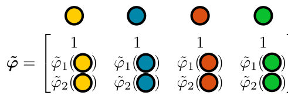
<figcaption class="paper-figure-caption"><b>Fig 3.</b> FIG. 3. Illustration of the embedded site-basis functions that map c = 4 species onto k = 3. The four chemical species are represented by four colors (yellow, blue, red, and green). Each species maps to one of four linearly dependent vectors (1, ˜φ1, ˜φ2)T in R3.</figcaption>
</figure>
<figure class="paper-figure-card">
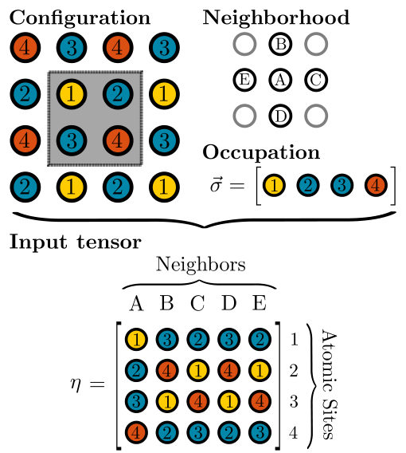
<figcaption class="paper-figure-caption"><b>Fig 4.</b> FIG. 4. Illustration of the construction of the input matrix η. The example configuration contains 4 atomic sites (1, 2, 3, and 4). The neighborhood of each site consists of the site itself (A) and its 4 near- est neighbors (B, C, D, and E). Element ηij of the input matrix holds the chemical species at neighborhood position j of the ith atomic site.</figcaption>
</figure>
<figure class="paper-figure-card">

<figcaption class="paper-figure-caption"><b>Fig 5.</b> FIG. 6. Illustration of a site property feedforward neural network. The input layer corresponds to the site descriptors ⃗Θ. The neural network is composed of 2 hidden layers. The final hidden layer pro- duces the latent features ⃗f. The final neuron outputs the site prop- erty xi. The weights w = {w1, w2, w3} and biases in each layer are the trainable parameters.</figcaption>
</figure>
</div>

<p><strong>Summary.</strong> This paper presents pyeCE, an open-source Python library implementing the embedded Cluster Expansion (eCE) method to overcome the computational intractability of modeling high-entropy alloys. By using machine learning embeddings, it efficiently predicts finite-temperature thermodynamic properties, demonstrating its success in modeling both chemical clustering and hydrogen solubility in complex metal alloys.</p>
<p><strong>Why it may be interesting.</strong> While focused on condensed matter thermodynamics, the use of ML to manage high-dimensional chemical space and predict complex phase behavior is relevant to understanding many-body interactions in quantum systems.</p>
<details>
<summary>Detailed structure</summary>
<p><strong>Main problem.</strong> Predicting the finite-temperature thermodynamics of complex alloys, especially high-entropy alloys, which are intractable using conventional cluster expansion methods.</p>
<p><strong>Main result.</strong> The authors introduce pyeCE, a library that successfully models the short-range order and composition dependence of hydrogen solubility in complex refractory alloys.</p>
<p><strong>Method.</strong> The paper implements the embedded cluster expansion (eCE) formalism, which uses machine learning to map many chemical species onto a smaller set of effective species, allowing for the calculation of thermodynamic properties via Monte Carlo sampling.</p>
<p><strong>Model / system.</strong> The model is applied to multicomponent alloys (e.g., 9-component refractory alloys, Mo–Nb–W systems) where the total energy is modeled by a neural network fed by symmetry-adapted descriptors derived from an embedded chemical basis.</p>
<p><strong>Key observables.</strong> Short-range order, hydrogen uptake ($\langle H/M 
angle$), and the composition dependence of these properties.</p>
<p><strong>Important parameters / regimes.</strong> Temperature (T), chemical potential ($\mu_H$), and the dimensionality reduction parameter ($k$) in the embedding.</p>
<p><strong>Assumptions / limitations.</strong> The total property is assumed to be a sum of site contributions ($\sum \xi_i$), and the metal sublattice is fixed based on a high-temperature snapshot during hydrogen dissolution simulations.</p>
<p><strong>Figures summary.</strong> Figures illustrate the general workflow of pyeCE (Embedding $
ightarrow$ Descriptors $
ightarrow$ NN $
ightarrow$ MC Simulation), and specific results show hydrogen solubility dependence on alloy chemistry and coordination preferences.</p>
<p><strong>Paper structure.</strong> The paper introduces the limitations of conventional CE, details the eCE formalism (embedding, descriptor construction, NN input), describes the modular pyeCE implementation, and validates the method on two distinct material systems (refractory alloys and H-dissolution).</p>
</details>
<details>
<summary>Abstract</summary>
<p>The cluster expansion is a widely used approach for predicting the finite-temperature thermodynamics of alloys from zero-kelvin first-principles calculations, but its conventional formulation becomes intractable for materials with more than three or four chemical species. High-entropy alloys have therefore remained largely out of reach. We present pyeCE, an open-source Python library that implements the embedded cluster expansion (eCE), in which machine learning maps many chemical species onto a smaller set of effective species and thereby limits the growth in the number of cluster functions. pyeCE provides the complete modeling workflow, including the construction of symmetry-adapted descriptors with a learnable per-sublattice chemical embedding, a neural-network energy model, ladder-based training, uncertainty quantification, and finite-temperature simulations through Monte Carlo sampling. Built on the PyTorch and pymatgen libraries, it supports systems with multiple species on multiple sublattices and runs on graphics processing units. We demonstrate the package on two material systems. In the first, a single model spanning the full composition space of a 9-component refractory alloy resolves short-range order and order--disorder behavior. This model enables rapid screening for compositions with strong Cr clustering, a feature linked to the formation of a continuous, corrosion-resistant oxide scale. In the second, a model of hydrogen dissolution in a Mo--Nb--W alloy reproduces the composition dependence of hydrogen uptake and resolves the interstitial environments that hydrogen occupies. The modular design of pyeCE allows it to be extended to problems beyond alloy thermodynamics, including kinetics, defect energetics, and the coupling of chemical order to magnetic and vibrational degrees of freedom.</p>
</details>
<p><sub><a href="#top">↑ back to top</a></sub></p>

<p><a id="paper-2609.09931"></a></p>
<h3 id="revealing-the-quantum-signature-of-gravity-via-gravitational-waves"><a href="http://arxiv.org/abs/2609.09931v1">Revealing the Quantum Signature of Gravity via Gravitational Waves</a></h3>
<p><strong>Authors:</strong> Partha Nandi<br>
<strong>Type:</strong> theory · <strong>Category:</strong> other · <strong>PDF:</strong> <a href="https://arxiv.org/pdf/2609.09931v1">https://arxiv.org/pdf/2609.09931v1</a><br>
<strong>Analysis basis:</strong> full PDF text, analyzed in chunks
<strong>Topic relevance:</strong> <code>quantum measurements</code> <strong>3/5</strong> · <code>Keldysh / 2PI / non-Gaussian methods</code> <strong>1/5</strong> · <code>analog quantum simulation</code> <strong>1/5</strong> · <code>correlated / nonlocal dissipation</code> <strong>1/5</strong></p>
<div class="figure-strip-hint">↔ Scroll figures horizontally</div>
<div class="paper-figures-scroll">
<figure class="paper-figure-card">

<figcaption class="paper-figure-caption"><b>Fig 1.</b> Low-resolution page preview, page 2</figcaption>
</figure>
<figure class="paper-figure-card">
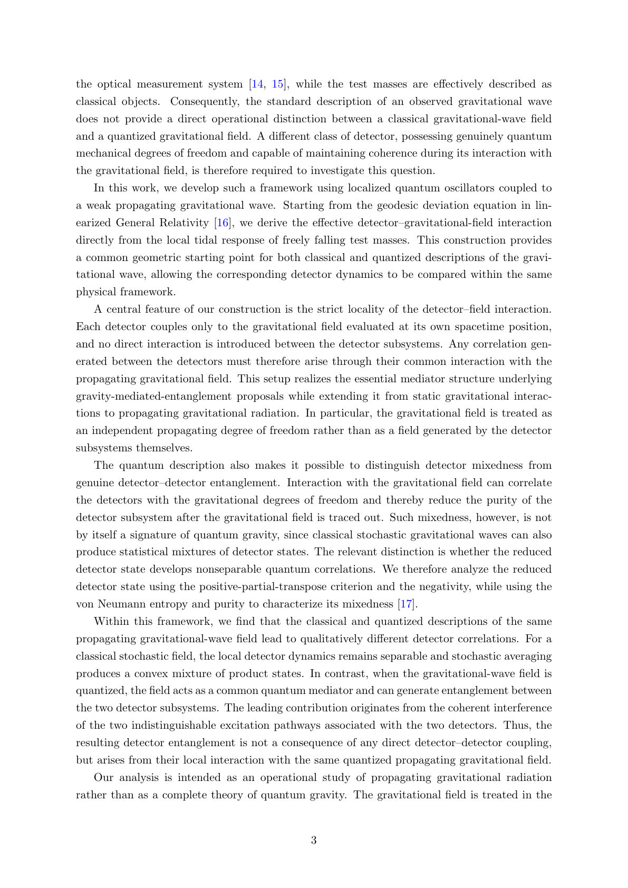
<figcaption class="paper-figure-caption"><b>Fig 2.</b> Low-resolution page preview, page 3</figcaption>
</figure>
<figure class="paper-figure-card">

<figcaption class="paper-figure-caption"><b>Fig 3.</b> Low-resolution page preview, page 4</figcaption>
</figure>
<figure class="paper-figure-card">

<figcaption class="paper-figure-caption"><b>Fig 4.</b> Low-resolution page preview, page 5</figcaption>
</figure>
<figure class="paper-figure-card">

<figcaption class="paper-figure-caption"><b>Fig 5.</b> Low-resolution page preview, page 6</figcaption>
</figure>
</div>

<p><strong>Summary.</strong> This work establishes a quantum information-based framework to test quantum gravity using gravitational waves. By analyzing the quantum dynamics of coupled detectors, the authors show that only quantized gravitational fields can generate genuine entanglement between detectors. This provides a clear, operational signature distinguishing quantum gravity effects from classical predictions.</p>
<p><strong>Why it may be interesting.</strong> The core mechanism—using entanglement as a diagnostic tool to distinguish quantum from classical field interactions—is highly relevant to open quantum systems and quantum optics, as it provides a concrete, measurable quantum signature.</p>
<details>
<summary>Detailed structure</summary>
<p><strong>Main problem.</strong> The paper investigates whether propagating gravitational waves can serve as operational probes to detect the quantum nature of gravity, moving beyond classical measurements of spacetime perturbations.</p>
<p><strong>Main result.</strong> Quantized gravitational waves can coherently mediate genuine entanglement between two spatially separated detectors, a signature that cannot be generated by classical stochastic gravitational wave backgrounds.</p>
<p><strong>Method.</strong> The authors develop a unified theoretical framework by deriving the effective detector Hamiltonian from the geodesic deviation equation and constructing the full quantum dynamics for the detector subsystems.</p>
<p><strong>Model / system.</strong> The model involves localized quantum oscillators (detectors) coupled to a propagating gravitational-wave field, analyzed within the weak-field regime of linearized General Relativity.</p>
<p><strong>Key observables.</strong> Entanglement negativity, quantum coherence, quantum memory, and the comparison between detector mixedness (classical) versus entanglement (quantum).</p>
<p><strong>Important parameters / regimes.</strong> The analysis relies on the weak-field, perturbative, and single-mode approximations.</p>
<p><strong>Assumptions / limitations.</strong> The study is an operational analysis of propagating radiation and does not constitute a complete theory of quantum gravity.</p>
<p><strong>Paper structure.</strong> The paper is structured around establishing the quantum information framework, deriving the Hamiltonian, formulating the dynamics, and finally comparing the entanglement generated by classical versus quantized fields.</p>
</details>
<details>
<summary>Abstract</summary>
<p>Can propagating gravitational waves serve as operational probes of the quantum nature of gravity? We address this question by developing a unified theoretical framework that combines spacetime geometry, quantum information, and gravitational-wave physics. Starting from the geodesic deviation equation in linearized General Relativity, we derive the effective detector Hamiltonian directly from spacetime geometry and construct the complete quantum dynamics for detector subsystems interacting with both classical and quantized propagating gravitational-wave fields. This unified formulation enables a direct comparison between classical and quantum descriptions of gravitational radiation within the same physical framework. We demonstrate that classical gravitational-wave backgrounds can induce mixedness in the detector state but cannot generate genuine quantum correlations between the detector subsystems. In contrast, quantized gravitational waves coherently mediate gravity-induced entanglement, quantum coherence, quantum memory, and nonclassical correlations, providing clear operational signatures of the quantum nature of propagating gravitational radiation. We further discuss how mesoscopic quantum mechanical oscillators offer a promising route towards experimentally probing these effects. Our results establish a geometric and quantum-information-based framework for exploring quantum gravity through propagating gravitational waves.</p>
</details>
<p><sub><a href="#top">↑ back to top</a></sub></p>

<p><a id="paper-2609.09291"></a></p>
<h3 id="spectral-core-tail-architecture-for-locally-certified-gibbs-state-preparation"><a href="http://arxiv.org/abs/2609.09291v1">Spectral Core-Tail Architecture for Locally Certified Gibbs-State Preparation</a></h3>
<p><strong>Authors:</strong> Rui-Hao Li<br>
<strong>Type:</strong> theory · <strong>Category:</strong> statistical mechanics · <strong>PDF:</strong> <a href="https://arxiv.org/pdf/2609.09291v1">https://arxiv.org/pdf/2609.09291v1</a><br>
<strong>Analysis basis:</strong> full PDF text, analyzed in chunks
<strong>Topic relevance:</strong> <code>analog quantum simulation</code> <strong>3/5</strong> · <code>Keldysh / 2PI / non-Gaussian methods</code> <strong>1/5</strong> · <code>methods for driven-dissipative</code> <strong>1/5</strong> · <code>scars &amp; prethermalization</code> <strong>1/5</strong></p>
<div class="figure-strip-hint">↔ Scroll figures horizontally</div>
<div class="paper-figures-scroll">
<figure class="paper-figure-card">
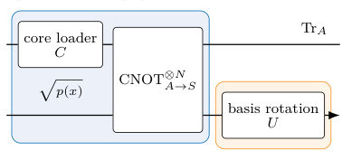
<figcaption class="paper-figure-caption"><b>Fig 1.</b> FIG. 1. SCTA architecture in a purification-based implemen- tation. The spectral core first loads amplitudes p</figcaption>
</figure>
<figure class="paper-figure-card">
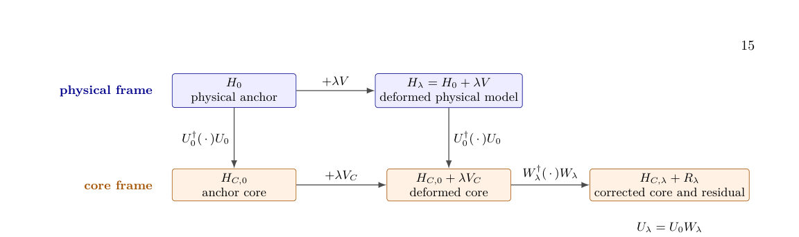
<figcaption class="paper-figure-caption"><b>Fig 2.</b> FIG. 2. Physical- and core-frame representation of a deformation of an exact anchor. Adding λV deforms H0 into Hλ, and conjugation by the anchor tail U0 expresses the deformed Hamiltonian as HC,0 + λVC in the core frame. The correction Wλ is chosen so that the transformed core-frame Hamiltonian separates into the corrected loadable core HC,λ and the residual Rλ. Equivalently, the corrected physical tail is Uλ = U0Wλ.</figcaption>
</figure>
<figure class="paper-figure-card">

<figcaption class="paper-figure-caption"><b>Fig 3.</b> FIG. 3. Local residual scaling for the graph-stabilizer bench- mark. (a) Pauli incident strength εP of the bare and first-order residuals versus |λ| at N = 12; markers are the computed val- ues, dashed lines are power-law fits over the complete sampled range, and the adjacent labels give the fitted exponents, includ- ing one-standard-error uncertainties. (b) Incident strength versus system size at fixed λ = 0.05, showing that the first- order result saturates by N = 12 in the tested size sequence. The bare and first-order constructions are indicated by gray squares and blue circles, respectively.</figcaption>
</figure>
<figure class="paper-figure-card">

<figcaption class="paper-figure-caption"><b>Fig 4.</b> FIG. 4. Physical local Gibbs-state accuracy at N = 8. (a) Maximum trace-norm distance D1 between contiguous two- site marginals of the exact Gibbs state and those of the bare or first-order state, versus |λ| for three inverse temperatures β ∈{0.5, 1, 2}. (b) Maximum error ∆ZZ in the corresponding ZiZi+1 expectation values. In both panels, markers are the computed values and dashed curves are grouped power-law fits over all nine sampled couplings; each grouped fit uses a common exponent and a temperature-dependent prefactor, and the adjacent labels give the common exponent with its one-standard-error uncertainty. The common legends encode inverse temperature by color—orange for β = 0.5,...</figcaption>
</figure>
<figure class="paper-figure-card">
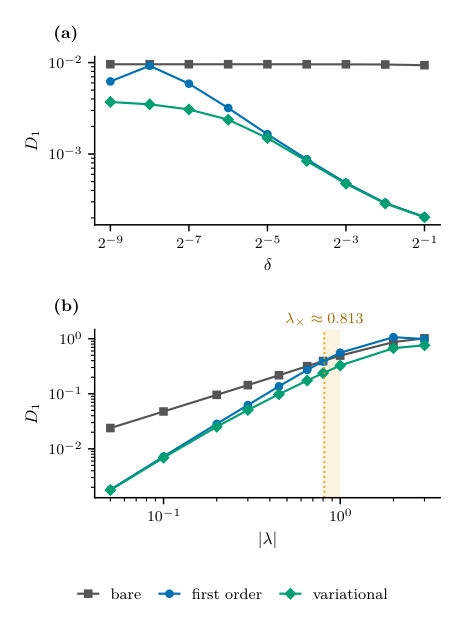
<figcaption class="paper-figure-caption"><b>Fig 5.</b> FIG. 5. Variational performance in the two regimes where the first-order construction loses perturbative control, evaluated at N = 8 and β = 1. (a) Maximum nearest-neighbor trace-norm error D1 versus the field staggering δ at fixed λ = 0.02, with resonance approached toward the left. (b) The same error versus |λ| at fixed δ = 0.25; the orange band marks the first sampled bracket 0.8 ≤λ ≤1 in which the first-order corrected error becomes larger than the bare error, and the dotted line marks λ× ≃0.813, obtained by linear interpolation in ln λ within that bracket. In both panels, the bare, first-order corrected, and variational constructions are indicated by gray squares, blue circles, and...</figcaption>
</figure>
</div>

<p><strong>Summary.</strong> This paper introduces the Spectral Core-Tail Architecture (SCTA) as a systematic framework for preparing quantum Gibbs states. It rigorously analyzes the error sources by decomposing the problem into a core, a tail, and a residual. The key achievement is demonstrating that controlled, perturbative corrections can suppress preparation errors quadratically, offering a powerful tool for simulating thermal states in complex quantum systems.</p>
<p><strong>Why it may be interesting.</strong> This work provides a rigorous, structured approach to state preparation for thermal equilibrium states, which is fundamental to understanding quantum dynamics and thermalization in many-body systems.</p>
<details>
<summary>Detailed structure</summary>
<p><strong>Main problem.</strong> The central problem is developing a framework to prepare a quantum Gibbs state, $
ho_eta(H)$, which requires accurately reproducing both the thermal distribution and the underlying many-body eigenspaces.</p>
<p><strong>Main result.</strong> The authors introduce the Spectral Core-Tail Architecture (SCTA) and show that for small deformations of exact anchor Hamiltonians, the resulting Hamiltonian mismatch and local Gibbs-state error suppress quadratically in the perturbative regime.</p>
<p><strong>Method.</strong> The methodology involves decomposing the state preparation into a structured thermal core, a unitary tail, and an error residual, followed by applying a Schrieffer-Wolff-type local reduction procedure for perturbative corrections.</p>
<p><strong>Model / system.</strong> The work is general for quantum many-body systems described by a Hamiltonian $H$, but specific tests involve inhomogeneous transverse-field Ising chains (free-fermionic) and graph-stabilizer Hamiltonians.</p>
<p><strong>Key observables.</strong> Local Gibbs-state error bound ($   ext{Dr}$), Hamiltonian mismatch ($R$), and the physical free-energy density ($f_eta$).</p>
<p><strong>Important parameters / regimes.</strong> Inverse temperature ($eta$), deformation strength ($\lambda$), and locality radius ($r$).</p>
<p><strong>Assumptions / limitations.</strong> Assumptions include uniform locality, solvability, and the ability to control the response envelope via shell summability for error bounding.</p>
<p><strong>Figures summary.</strong> Figures illustrate the purification-based implementation of SCTA, showing core loading on an ancilla register and the subsequent action of the tail unitary.</p>
<p><strong>Paper structure.</strong> The paper is structured around developing the operational framework (SCTA), identifying exact anchor Hamiltonians, applying perturbative deformations via local reduction, and concluding with numerical and variational tests.</p>
</details>
<details>
<summary>Abstract</summary>
<p>Preparing a quantum Gibbs state requires reproducing both its thermal distribution and the associated many-body eigenspaces. In this work, we formalize the spectral core-tail architecture (SCTA) as a framework comprising a structured thermal core, a geometrically characterized unitary tail, and an exact residual measuring the remaining core-frame Hamiltonian mismatch. We derive a local Gibbs-state error bound separating core-preparation, tail-implementation, and modeling errors. The modeling contribution is volume uniform when its Kubo-Mori response meets the shell summability condition and the relevant local data remain uniform. We then highlight three anchor Hamiltonian classes which admit exact core-tail constructions with zero residuals. For small deformations of an exact anchor, we employ a Schrieffer-Wolff reduction procedure to construct a corrected core-tail pair that formally removes the deformation order by order. Under uniform locality and solvability assumptions, we show that the first-order reduction yields a residual that remains bounded and is quadratic in the deformation strength. Furthermore, we numerically test the first-order reduction on deformed graph-stabilizer Hamiltonians. The numerical results show approximately quadratic suppression of both the Hamiltonian-level mismatch and the local Gibbs-state error in the perturbative regime. We also find that the constructed correction circuit structure remains useful as a variational ansatz beyond perturbative control, often improving on both the bare and prescribed first-order states.</p>
</details>
<p><sub><a href="#top">↑ back to top</a></sub></p>

<p><a id="paper-2609.10352"></a></p>
<h3 id="universal-correlations-in-the-abelian-sandpile-model"><a href="http://arxiv.org/abs/2609.10352v1">Universal correlations in the Abelian sandpile model</a></h3>
<p><strong>Authors:</strong> Qiyu Liu, Jan-Niklas Herre, Prajit Baruah, Sebastian Dreizler, Christoph Karrasch, Wioletta Ruszel, Dirk Schuricht<br>
<strong>Type:</strong> theory · <strong>Category:</strong> statistical mechanics · <strong>PDF:</strong> <a href="https://arxiv.org/pdf/2609.10352v1">https://arxiv.org/pdf/2609.10352v1</a><br>
<strong>Analysis basis:</strong> full PDF text, analyzed in chunks
<strong>Topic relevance:</strong> <code>non-equilibrium universality</code> <strong>3/5</strong> · <code>analog quantum simulation</code> <strong>2/5</strong> · <code>driven-dissipative phase transition</code> <strong>1/5</strong></p>
<div class="figure-strip-hint">↔ Scroll figures horizontally</div>
<div class="paper-figures-scroll">
<figure class="paper-figure-card">

<figcaption class="paper-figure-caption"><b>Fig 1.</b> Figure 1: Toppling dynamics of the ASM on a 4 × 4 square lattice with wired boundary conditions, ie, all boundary sites being connected to an additional vertex which we call the sink. Closed (bulk) sites are shown in blue, open (boundary) sites in orange, and the surrounding box represents the sink; dotted lines indicate edges connecting boundary sites to the sink. (a) A stable configuration to which one grain has been added at an interior bulk site, which is thereby becomes unstable (hi = 5 &gt; z∗ i = 4, red ring). (b) After relaxation the system reaches the stable configuration C: the unstable site has toppled (losing z∗ i = 4 grains, dropping to h = 1) and each of its four neighbours has...</figcaption>
</figure>
<figure class="paper-figure-card">

<figcaption class="paper-figure-caption"><b>Fig 2.</b> Figure 2: The Majumdar–Dhar burning bijection for the recurrent configuration C of Figure 1(b). (a) The sink-rooted spanning tree T = σ(C): arrows point from each site to its tree parent (towards the sink), and each site is labelled by its burning time d(v), equal to its depth in T. Only the tree edges are drawn (as arrows); the four closed (bulk) sites are marked A–D. (b) Reconstruction of the height at each bulk site. Reading the neighbours’ burning times from panel (a), U counts the neighbours that burn at time ≥d(v). The column Pv lists the previous-layer neighbours (those in burning layer d(v)−1) as a subset of {E, N, W, S} written in this fixed canonical order (one can analogously...</figcaption>
</figure>
<figure class="paper-figure-card">

<figcaption class="paper-figure-caption"><b>Fig 3.</b> Figure 2(b) tabulates d(v), Pv, U, k and the reconstructed hv for the four bulk sites A–D of the tree in Figure 2(a); the heights agree with those of C [Figure 1(b)], establishing the bijection T ↔C. The correspondence has a natural interpretation: both spanning trees and recurrent configurations encode global connectivity to the sink without frozen regions. A spanning tree provides every vertex with a unique path to the sink, while a recurrent configuration contains no FSC—no cluster of sites is so depleted that it can never be activated by avalanches from the boundary. The burning process bridges these viewpoints: the tree dictates the order in which fire propagates from the sink, and the...</figcaption>
</figure>
<figure class="paper-figure-card">
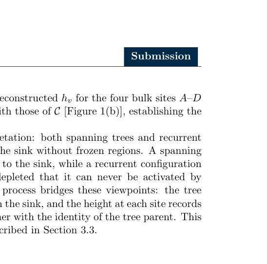
<figcaption class="paper-figure-caption"><b>Fig 4.</b> Figure 3 shows the three planar lattices studied in this work. Each lattice is characterised by its coordination number z (the number of nearest neighbours per bulk site) and the number of sites per unit cell:</figcaption>
</figure>
<figure class="paper-figure-card">

<figcaption class="paper-figure-caption"><b>Fig 5.</b> Figure 3: The three planar lattices studied in this work. (a) Square lattice (z = 4). (b) Honeycomb lattice (z = 3). (c) Kagome lattice (z = 4); the honeycomb and kagome do- mains are hexagonal, reflecting the natural boundary of the underlying triangular Bravais lattice. In each panel L is the linear system size (the domain diameter for the hexagonal cases), measured in nearest-neighbour (bond-length ℓ) units. A single nearest-neighbour bond of length ℓis highlighted (red) in each panel; we set ℓ= 1 throughout, so all dis- tances and system sizes are quoted in these units. Writing a for the lattice constant (a = ℓ square, a = √</figcaption>
</figure>
</div>

<p><strong>Summary.</strong> This paper provides a comprehensive numerical and analytical study of universal correlations in the Abelian sandpile model on multiple lattices, including the kagome lattice. By using advanced sampling techniques, the authors confirm that the system's bulk correlations align with predictions from logarithmic conformal field theory. This work advances the understanding of critical behavior in non-equilibrium statistical physics models.</p>
<p><strong>Why it may be interesting.</strong> While focused on classical statistical mechanics, the study of critical phenomena, universal scaling laws, and non-equilibrium dynamics in the ASM provides deep insights into critical exponents and correlation functions relevant to quantum critical points in many-body systems.</p>
<details>
<summary>Detailed structure</summary>
<p><strong>Main problem.</strong> The study focuses on characterizing and calculating universal correlations within the two-dimensional Abelian sandpile model (ASM) across various lattices.</p>
<p><strong>Main result.</strong> The numerical results for the kagome lattice confirm power-law scaling consistent with logarithmic conformal field theory (LCFT) predictions, and the authors derived closed-form analytical expressions for certain observables.</p>
<p><strong>Method.</strong> The authors employ advanced sampling techniques (Wilson's algorithm) combined with the Majumdar–Dhar burning bijection to generate independent recurrent configurations, allowing for the calculation of bulk correlation functions.</p>
<p><strong>Model / system.</strong> The system is the Abelian sandpile model defined on planar lattices (square, honeycomb, and kagome). The dynamics are governed by local toppling rules, and the analysis focuses on the set of recurrent configurations.</p>
<p><strong>Key observables.</strong> Bulk correlation functions (e.g., two-point height correlations $C_{a,b}(r)$) and the height-1 probability.</p>
<p><strong>Important parameters / regimes.</strong> The lattice structure (square, honeycomb, kagome) and the scaling limit ($|V| 	o \infty$).</p>
<p><strong>Assumptions / limitations.</strong> The analysis assumes the validity of LCFT predictions for the scaling limit and utilizes the bijection between recurrent states and spanning trees.</p>
<p><strong>Figures summary.</strong> Figures illustrate toppling dynamics, the Majumdar–Dhar burning bijection, and show data fits for rescaled correlations on the Kagome lattice against $\log r$ and $\log^2 r$.</p>
<p><strong>Paper structure.</strong> The paper first establishes the mathematical framework using the bijection between recurrent states and spanning trees. It then numerically computes correlation functions for different lattices, comparing them against LCFT predictions. Finally, it derives analytical results, such as Green function values, for the kagome lattice.</p>
</details>
<details>
<summary>Abstract</summary>
<p>We numerically study the bulk correlation functions in the two-dimensional Abelian sandpile model, aiming both to compare with the predictions of logarithmic conformal field theory and to extend the analysis to lattices where analytical methods are difficult to apply. Wilson's algorithm efficiently generates large-scale uniform spanning trees in parallel, which can be mapped to independent recurrent configurations via the Majumdar--Dhar burning bijection, eliminating sample autocorrelations and yielding fast convergence. On the square (single-sublattice) and honeycomb (two-sublattice) lattices our results agree well with the analytical predictions. For the kagome lattice we provide the first systematic numerical study of the bulk correlation functions, and cross-check the bulk height-1 probability against a closed-form analytical expression that we also derive here via the lattice Green function.</p>
</details>
<p><sub><a href="#top">↑ back to top</a></sub></p>

<p><a id="paper-2609.09289"></a></p>
<h3 id="finite-temperature-flat-band-ferromagnetism-in-the-kagome-hubbard-model"><a href="http://arxiv.org/abs/2609.09289v1">Finite-Temperature Flat-Band Ferromagnetism in the Kagome Hubbard Model</a></h3>
<p><strong>Authors:</strong> Alon Strugatsky, Roser Valení, Jonas B. Profe<br>
<strong>Type:</strong> theory · <strong>Category:</strong> strongly correlated electrons · <strong>PDF:</strong> <a href="https://arxiv.org/pdf/2609.09289v1">https://arxiv.org/pdf/2609.09289v1</a><br>
<strong>Analysis basis:</strong> full PDF text, analyzed in chunks
<strong>Topic relevance:</strong> <code>analog quantum simulation</code> <strong>3/5</strong> · <code>Keldysh / 2PI / non-Gaussian methods</code> <strong>2/5</strong></p>
<div class="figure-strip-hint">↔ Scroll figures horizontally</div>
<div class="paper-figures-scroll">
<figure class="paper-figure-card">
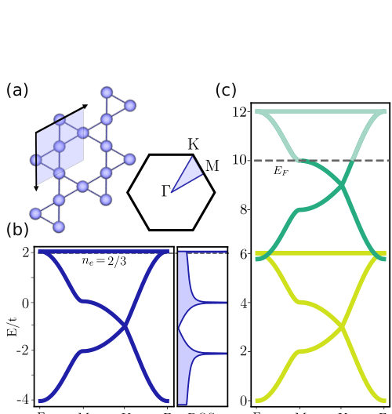
<figcaption class="paper-figure-caption"><b>Fig 1.</b> Figure 1. (a) The kagome lattice in reciprocal and real space with a single unit cell highlighted by blue shading. (b) The non-interacting bandstructure and density of states. (c) Mean- field spin-split band structure at nF B = 1/8 into a majority spin band (light green) and a minority spin band (dark green), with the Fermi level crossing the van-Hove singularity of the minority spin band.</figcaption>
</figure>
<figure class="paper-figure-card">
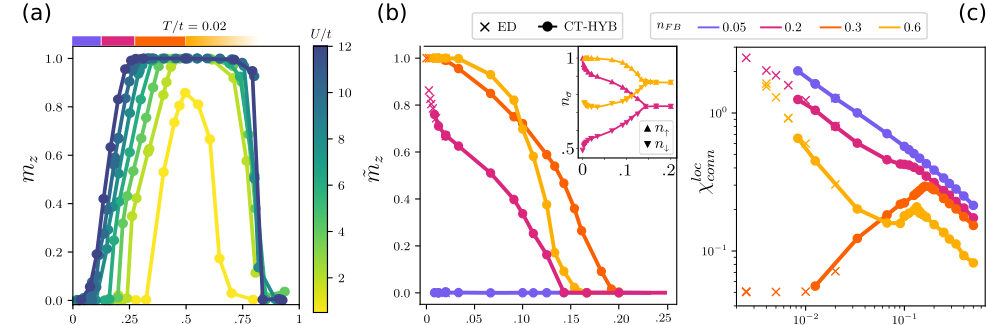
<figcaption class="paper-figure-caption"><b>Fig 2.</b> Figure 2. Single-site DMFT results. (a) Evolution of the normalized impurity magnetization as a function of the flat-band filling nF B for different interaction strengths, indicated by the curve colors, at T/t = 0.02. The four regimes discussed in the text are indicated above the plot: from left to right, the paramagnetic (purple), onset magnetization (magenta), dispersive demagnetization (orange), and flat-band (FB) demagnetization (dark yellow) regimes. (b) Temperature dependence of the normalized magnetization at U/t = 10 in the four regimes. Saturation is reached only at T →0, indicating strong competition between the ferromagnetic order and thermal fluctuations. For larger fillings the...</figcaption>
</figure>
<figure class="paper-figure-card">

<figcaption class="paper-figure-caption"><b>Fig 3.</b> Figure 3. Spin-resolved local density of states (DOS) for the majority (a) and minority (b) spin channels, together with the momentum-resolved spectral functions (c)-(f) obtained from DMFT. The Fermi level is set to EF = 0. In the onset regime, the minority-spin channel exhibits a strong loss of quasiparticle weight near the Fermi level (Fig. 3(d)). In contrast, in the saturated regime, the minority-spin quasiparticles remain fully coherent ((e,f)).</figcaption>
</figure>
</div>

<p><strong>Summary.</strong> This theoretical study investigates magnetism in the Kagome Hubbard model at flat-band fillings using Dynamical Mean-Field Theory. The authors demonstrate strong flat-band ferromagnetism and identify an unconventional quasi-ordered phase. This phase is marked by persistent local spin fluctuations down to zero temperature, a behavior attributed to the macroscopic degeneracy of the flat band itself.</p>
<p><strong>Why it may be interesting.</strong> The finding of persistent, non-classical spin fluctuations due to flat-band degeneracy provides a novel theoretical mechanism for magnetic instability in correlated systems, which is relevant to understanding exotic quantum ground states.</p>
<details>
<summary>Detailed structure</summary>
<p><strong>Main problem.</strong> To elucidate the microscopic origin of correlated electronic phases in Kagome metals, particularly in the flat-band regime, by separating correlation effects from material-specific details.</p>
<p><strong>Main result.</strong> The study finds strong signatures of flat-band ferromagnetism and uncovers an unconventional quasi-ordered phase characterized by persistent local spin fluctuations down to zero temperature, contrasting with classical ferromagnetism.</p>
<p><strong>Method.</strong> Dynamical Mean-Field Theory (DMFT) is employed to map the lattice problem onto a quantum impurity problem, solved using advanced techniques like CT-HYB QMC and ED.</p>
<p><strong>Model / system.</strong> The system studied is the single-orbital Kagome-Hubbard model, analyzed at flat-band fillings using the Hamiltonian $H = -\sum_{\langle i,j
angle,\sigma} t (c^\dagger_{i\sigma} c_{j\sigma} + 	ext{h.c.}) + \sum_i U n_{i\uparrow} n_{i\downarrow}$.</p>
<p><strong>Key observables.</strong> Normalized Magnetization ($    ilde{m}<em ext_conn="ext{conn">z$), local spin susceptibility ($\chi</em>$), and spin-resolved spectral functions $A(\mathbf{k}, \omega)$.}}^{    ext{loc}</p>
<p><strong>Important parameters / regimes.</strong> Flat-Band Filling ($n_{	ext{FB}}$), Temperature ($T$), and the interaction strength ($U$).</p>
<p><strong>Assumptions / limitations.</strong> The primary approximation is the single-site DMFT approach, which localizes the problem and neglects spatial correlations beyond the impurity site.</p>
<p><strong>Figures summary.</strong> Figures illustrate the magnetic regimes (paramagnetic, onset, FB demagnetization) based on filling, the temperature dependence of magnetization, and the spin susceptibility ($\chi_{	ext{conn}}^{	ext{loc}}$) showing distinct Curie-like responses in the flat-band regimes.</p>
<p><strong>Paper structure.</strong> The paper develops the analysis by first establishing the model and methods (DMFT), then analyzing the magnetic transitions across different filling regimes, and finally contrasting the resulting spin fluctuation behavior with classical expectations.</p>
</details>
<details>
<summary>Abstract</summary>
<p>Kagome metals exhibit a rich interplay of topology, electronic correlations, and lattice dynamics. Recent discoveries of Kagome materials with a flat band near the Fermi level have revealed a variety of correlated electronic phases. However, elucidating their microscopic origin remains challenging, as realistic descriptions require accounting for multiple orbitals and competing interactions on an equal footing. To disentangle correlation effects from material-specific details and identify the essential physics of the flat-band regime, we study the single-orbital Kagome-Hubbard model at flat-band fillings using dynamical mean-field theory. We find strong signatures of flat-band ferromagnetism, consistent with exact and mean-field ground-state results. Moreover, we uncover an unconventional quasi-ordered phase in which a partially filled spin-polarized flat band pinned at the Fermi level gives rise to persistent local spin fluctuations down to zero temperature, in striking contrast to the classical behavior expected for a conventional ferromagnet. Our results demonstrate that these anomalous fluctuations are an intrinsic consequence of the flat-band degeneracy and establish a minimal framework for understanding correlation effects in flat-band Kagome systems.</p>
</details>
<p><sub><a href="#top">↑ back to top</a></sub></p>

<p><a id="paper-2609.10443"></a></p>
<h3 id="gauge-mean-field-theories-of-the-underscreened-kondo-lattice"><a href="http://arxiv.org/abs/2609.10443v1">Gauge mean-field theories of the underscreened Kondo lattice</a></h3>
<p><strong>Authors:</strong> Ewan Scott, Michal Kwasigroch<br>
<strong>Type:</strong> theory · <strong>Category:</strong> strongly correlated electrons · <strong>PDF:</strong> <a href="https://arxiv.org/pdf/2609.10443v1">https://arxiv.org/pdf/2609.10443v1</a><br>
<strong>Analysis basis:</strong> full PDF text, analyzed in chunks
<strong>Topic relevance:</strong> <code>Keldysh / 2PI / non-Gaussian methods</code> <strong>3/5</strong> · <code>analog quantum simulation</code> <strong>1/5</strong> · <code>methods for driven-dissipative</code> <strong>1/5</strong></p>
<div class="figure-strip-hint">↔ Scroll figures horizontally</div>
<div class="paper-figures-scroll">
<figure class="paper-figure-card">
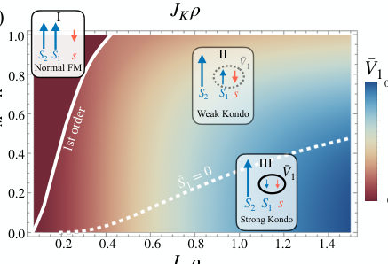
<figcaption class="paper-figure-caption"><b>Fig 1.</b> FIG. 1. Ground state phase diagrams showing three phases: I – The normal FM state with local moments maximally polar- ized ¯S1,2 = 1/2 and no hybridization ¯V1 = 0, II – Weak Kondo ferromagnet with magnetization of the hybridized f-moment ¯S1 &gt; 0 and weak hybridization ¯V1 &gt; 0, III – Strong Kondo ferromagnet with weak magnetization of the hybridized f- moment ¯S1 &lt; 0 and strong hybridization, ¯V1 &gt; 0. The un- hybridized f-moment has a magnetization ¯S1 = 1/2 in all phases. Plot (a) shows the magnetic moment of the hybridized f-electron ¯S1 as a function of the dimensionless Kondo cou- pling JKρ and the relative strength of the coupling in the magnetic exchange channel JM = 2JK</figcaption>
</figure>
<figure class="paper-figure-card">
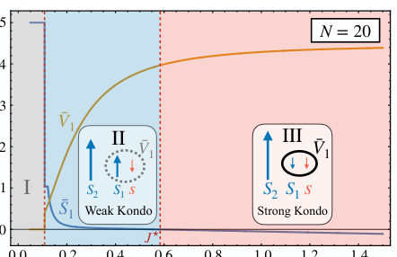
<figcaption class="paper-figure-caption"><b>Fig 2.</b> FIG. 2. A plot of the groundstate order parameters ¯S1 and ¯V1, magnetization and hybridization of the f1-fermion respec- tively for N = 20. The unhybridized f2-fermion always has a magnetization of ¯S2 = 1</figcaption>
</figure>
<figure class="paper-figure-card">

<figcaption class="paper-figure-caption"><b>Fig 3.</b> FIG. 3. Feynman diagrams for the (a) RKKY interaction between unhybridized f2-fermions, (b) the Hund’s interaction between f2-fermions, and (c) the diagrammatic expansion of the ϕ propagator Gϕϕ(ω) = ⟨ϕ†(ω)ϕ(ω)⟩in the RPA approximation. The double lines indicate the unhybridised f2-fermions, d are the heavy fermions (superposition of the hybridized f1-fermions and conduction electrons) and wavy lines are the ϕ gauge fields.</figcaption>
</figure>
</div>

<p><strong>Summary.</strong> This work develops a unified Gauge Mean-Field Theory to study the spin-1 underscreened Kondo lattice, a model exhibiting competition between magnetic order and Kondo screening. By utilizing a large-$N$ expansion, the authors unify disparate mean-field approaches and map out the ground state phase diagram. The results clarify the nature of the coexisting phases and highlight the role of quantum fluctuations in determining the system's ground state properties.</p>
<p><strong>Why it may be interesting.</strong> The use of gauge fields and large-$N$ expansions to treat strong correlations and competing orders (magnetic vs. Kondo) is highly relevant to understanding complex quantum materials.</p>
<details>
<summary>Detailed structure</summary>
<p><strong>Main problem.</strong> The paper addresses the complex problem of the spin-1 underscreened Kondo lattice (UKL), where magnetic order and Kondo hybridization can coexist.</p>
<p><strong>Main result.</strong> The authors develop a unifying variational theory that maps out the ground state phase diagram, revealing crucial differences between previously proposed mean-field treatments.</p>
<p><strong>Method.</strong> The study employs Gauge Mean-Field Theory (gMFT) using a large-$N$ expansion and an unbiased variational ansatz to calculate fluctuation corrections to the mean-field Hamiltonian.</p>
<p><strong>Model / system.</strong> The system is the spin-1 UKL model, described by a Hamiltonian involving Kondo coupling ($J_K$) and generalized using $N$ replicas of fermionic spin flavors. The theory incorporates local U(1) and SU(2) gauge symmetries.</p>
<p><strong>Key observables.</strong> Ground state phase diagram, magnetic moment ($ar{S}_1$), hybridization ($ar{V}_1$), and the strength of the residual ferromagnetic Hund interaction.</p>
<p><strong>Important parameters / regimes.</strong> Control parameter $N$, Kondo coupling $J_K$, and the relative strengths of Kondo energy ($T_K$) versus RKKY energy ($T_{RKKY}$).</p>
<p><strong>Assumptions / limitations.</strong> The analysis relies on the large-$N$ limit for the mean-field theory and uses Gaussian approximations for fluctuation corrections.</p>
<p><strong>Figures summary.</strong> Figures illustrate ground state phase diagrams showing three distinct phases (Normal FM, Weak Kondo, Strong Kondo) based on local moment polarization and hybridization, alongside diagrams detailing interaction types (RKKY, Hund's).</p>
<p><strong>Paper structure.</strong> The paper builds from defining the Hamiltonian and introducing the large-$N$ variational ansatz, proceeds to analyzing gauge field fluctuations and deriving fluctuation corrections ($\Delta H_{fluc}$), and culminates in mapping the full phase diagram and generalizing the theory to $S>1$.</p>
</details>
<details>
<summary>Abstract</summary>
<p>Various mean-field decoupling schemes have been introduced thus far to study the important and challenging problem of the spin-$1$ underscreened Kondo lattice where magnetic order can coexist with Kondo hybridization. We use a single control parameter $N$ and an unbiased variational ansatz to unify and connect the previously proposed decouplings to standard Read-Newns theory, where fluctuations are small in $1/N$. We compute the corrections around the large-$N$ limit. In particular, we make contact with Nozières strong-coupling theory by finding the residual ferromagnetic Hund interaction that decays logarithmically in the case of a heavy-fermion metal. We map out the ground state phase diagram as a function of $N$ and the Kondo coupling. We find crucial differences between the previously proposed mean-field theories in the strength of the hybridization and total magnetization of the coexistent phase. We show that, within our unifying variational theory, the previously proposed decouplings correspond to either taking $N=2$ from the start, or performing a $1/N$ expansion and then extrapolating to $N=2$. Finally, we summarize the generalization of our theory to $S>1$.</p>
</details>
<p><sub><a href="#top">↑ back to top</a></sub></p>

<p><a id="paper-2609.09371"></a></p>
<h3 id="materials-for-quantum-information-science-roles-in-the-quantum-evolution-20"><a href="http://arxiv.org/abs/2609.09371v1">Materials for Quantum Information Science: Roles in the Quantum Evolution 2.0</a></h3>
<p><strong>Authors:</strong> Thang Pham, Vsevolod Ivanov, Dominic P. Goronzy, Abhiram Devata, Joshua Feldon, David Barton, You Zhou<br>
<strong>Type:</strong> both · <strong>Category:</strong> quantum information and computing · <strong>PDF:</strong> <a href="https://arxiv.org/pdf/2609.09371v1">https://arxiv.org/pdf/2609.09371v1</a><br>
<strong>Analysis basis:</strong> full PDF text, analyzed in chunks
<strong>Topic relevance:</strong> <code>QC/QI experiment</code> <strong>3/5</strong> · <code>analog quantum simulation</code> <strong>1/5</strong> · <code>correlated / nonlocal dissipation</code> <strong>1/5</strong></p>
<div class="figure-strip-hint">↔ Scroll figures horizontally</div>
<div class="paper-figures-scroll">
<figure class="paper-figure-card">

<figcaption class="paper-figure-caption"><b>Fig 1.</b> Figure 1: Ecosystem of Quantum Evolution 2.0. The &quot;Materials&quot; block is the focus of this review. Images adapted and modified with permission from ref2 .</figcaption>
</figure>
<figure class="paper-figure-card">

<figcaption class="paper-figure-caption"><b>Fig 2.</b> Figure 2: Superconducting qubit performance is a function of the properties of the constituent materials and the surfaces and interfaces within the qubit device. The future of improved performance lies in understand these structure-property-performance relationships and developing novel materials and fabrication strategies to mitigate decoherence.</figcaption>
</figure>
<figure class="paper-figure-card">
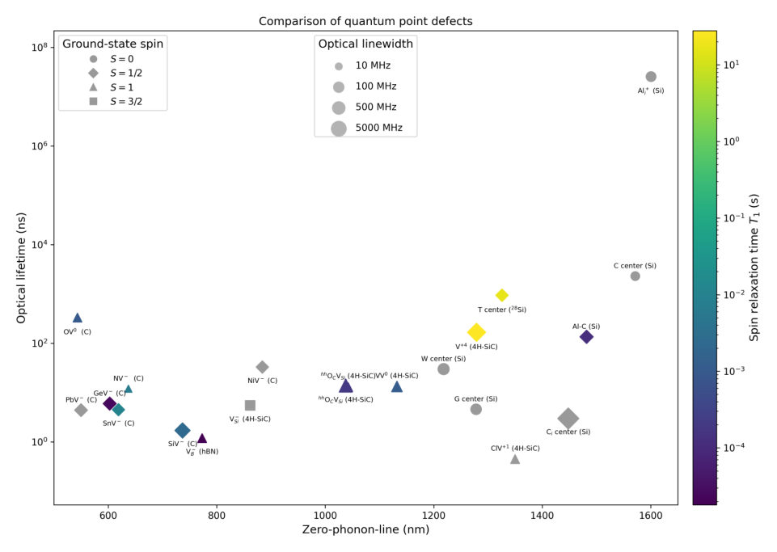
<figcaption class="paper-figure-caption"><b>Fig 3.</b> Figure 3: Comparison of some experimentally validated color center defect properties in diamond (C), 4H silicon carbide (4H-SiC), silicon (Si), and hexagonal boron nitride (hBN). The plot compares the optical radiative lifetime against the zero-phonon-line emission for each defect. For each defect, the marker shape indicates the spin state, the marker size represents the smallest experimentally measured linewidth on a logarithmic scale, and the marker color corresponds to the T1 spin-relaxation time (if known).</figcaption>
</figure>
<figure class="paper-figure-card">

<figcaption class="paper-figure-caption"><b>Fig 4.</b> Figure 4: Integrated waveguide materials primarily discussed in this review. Active materials include wide bandgap oxides and nitrides that feature nonlinear susceptibilities that can leverage external elec- tric fields to control optical properties. Passive materials, including tantalum pentoxide, offer potential advantages as low loss and low noise quantum photonic systems. Images taken adapted with permission from:164(lithium niobate),165(barium titanate),166(strontium titanate),167(aluminum nitride),168(silicon ni- tride), and169(tantalum pentoxide).</figcaption>
</figure>
<figure class="paper-figure-card">

<figcaption class="paper-figure-caption"><b>Fig 5.</b> Figure 5: photorefraction and drift in thin film lithium niobate. a) photorefraction is observed in nanocavities with nearly single photon level tuning. b) dielectric relaxation, as measured as a frequency dependence of the electro-optic response of a modulator, depends on both device geometry and chemistries used to etch and define the contact interface. c) Charge dynamics play a significant role in unwanted time-dependent responses in modulators. UV light modifies conductivity and reported lower activation energies in differing materials defines the magnitude of drift. These phenomena motivate a materials-level characterization of device response improvements, correlating device outcomes...</figcaption>
</figure>
</div>

<p><strong>Summary.</strong> This review analyzes the materials limitations hindering the scaling of quantum processors, arguing that performance is now bottlenecked by poorly controlled interfaces rather than device design. It surveys superconducting circuits, 2D materials, and other platforms, concluding that a unified, atomistic understanding of material defects is required to advance quantum information science.</p>
<p><strong>Why it may be interesting.</strong> It provides a crucial materials physics perspective on quantum computing, detailing how fundamental solid-state defects and interface chemistry directly dictate the achievable coherence times in superconducting qubits and other quantum hardware.</p>
<details>
<summary>Detailed structure</summary>
<p><strong>Main problem.</strong> The scaling of quantum computation is limited by material imperfections, specifically poorly controlled surfaces, buried interfaces, and defects across various quantum platforms.</p>
<p><strong>Main result.</strong> The materials challenges are universal across superconducting circuits, 2D materials, and quantum defects, requiring a fundamental shift toward atomistically controlled material synthesis.</p>
<p><strong>Method.</strong> The paper reviews the materials science challenges by surveying multiple quantum platforms, identifying dominant decoherence mechanisms, and proposing necessary characterization methods.</p>
<p><strong>Model / system.</strong> The review covers superconducting circuits (e.g., transmon qubits), quantum defects, quantum photonic devices, and 2D van der Waals heterostructures, all of which are subject to decoherence from material disorder.</p>
<p><strong>Key observables.</strong> Decoherence time ($T_2$), Quality factor ($Q$), and structural characterization data (e.g., defect density, oxide chemistry).</p>
<p><strong>Important parameters / regimes.</strong> Atomic-scale structure, interface chemistry, and the energy scales associated with Two-Level Systems (TLS).</p>
<p><strong>Assumptions / limitations.</strong> The primary assumption is that future quantum performance gains require solving the materials bottleneck by understanding structure-coherence relationships.</p>
<p><strong>Figures summary.</strong> Figure 1 illustrates the 'Ecosystem of Quantum Evolution 2.0,' positioning materials science as the central limiting factor. Other figures likely compare performance metrics across different quantum platforms.</p>
<p><strong>Paper structure.</strong> The paper follows a platform-by-platform review (superconducting circuits, defects, photonics, 2D materials), culminating in a cross-platform comparison that identifies shared material chemistry problems and necessary future research directions.</p>
</details>
<details>
<summary>Abstract</summary>
<p>Quantum information science is entering a second phase, the Quantum Evolution 2.0, in which the challenge has shifted from demonstrating coherent control of individual quantum states to building scalable multi-qubit processors and networks. This transition places materials science at the center of the field. Across superconducting circuits, quantum defects, quantum photonic devices, and emerging materials platforms, including two-dimensional materials and heterostructures, performance is now limited less by device design than by poorly controlled surfaces, buried interfaces, and defects whose atomic identities remain incompletely known. This review surveys the materials challenges of these quantum platforms together with the characterization methods needed to resolve them. For each platform we identify the dominant decoherence mechanisms, the current state of materials understanding, and the most pressing open materials problems. A cross-platform comparison then reveals a shared structure-coherence problem. The implicated material chemistry recurs across platforms, involving light elements in disordered or buried environments, yet no platform can quantitatively connect a specific atomic-scale structure to a measured change in coherence. We close by identifying three needs, mechanistic understanding of decoherence at the atomistic level, high-throughput proxy metrics predictive of device performance, and characterization tools built for quantum materials, whose resolution would advance coherence, scalability, and integration across all platforms.</p>
</details>
<p><sub><a href="#top">↑ back to top</a></sub></p>

<p><a id="paper-2609.10312"></a></p>
<h3 id="programmable-photonic-state-fusion-via-heralded-storage-of-asynchronously-generated-resources"><a href="http://arxiv.org/abs/2609.10312v1">Programmable photonic state fusion via heralded storage of asynchronously generated resources</a></h3>
<p><strong>Authors:</strong> Mustafa Gündoğan, Dennis Rätzel<br>
<strong>Type:</strong> theory · <strong>Category:</strong> quantum information and computing · <strong>PDF:</strong> <a href="https://arxiv.org/pdf/2609.10312v1">https://arxiv.org/pdf/2609.10312v1</a><br>
<strong>Analysis basis:</strong> full PDF text, analyzed in chunks
<strong>Topic relevance:</strong> <code>interference shaping light</code> <strong>3/5</strong> · <code>analog quantum simulation</code> <strong>1/5</strong> · <code>quantum measurements</code> <strong>1/5</strong></p>
<div class="figure-strip-hint">↔ Scroll figures horizontally</div>
<div class="paper-figures-scroll">
<figure class="paper-figure-card">
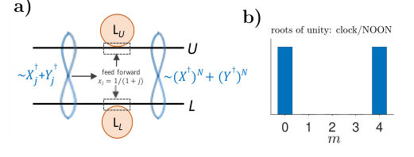
<figcaption class="paper-figure-caption"><b>Fig 1.</b> FIG. 1. Bosonic fusion for the clock-state implementation. (a) A specific realization of our fusion scheme for generating the photonic clock state considered for clock interferometry in [16, 17]. Once an elementary block ∼X† j + Y † j is heralded, the herald is fed forward to the tunable loop couplers, which are set to the programmed coupling xj. Successful loading places the newly generated photons into the same circulat- ing modes as the previously stored photons, removing their generation-time labels. Repeating the procedure for N suc- cessful loads yields the fused output. (b) Mode-occupation amplitudes obtained with the roots-of-unity phase settings for the case of N = 4. The index m...</figcaption>
</figure>
<figure class="paper-figure-card">

<figcaption class="paper-figure-caption"><b>Fig 2.</b> FIG. 2. Performance of the nb = 2 path–frequency realization. (a) Detected rates from Eq. (15) for frep = 10 MHz, ph = 10−2, η = 0.9, and ideal dump-port monitoring. The curves corre- spond to round-trip losses of 1.2%, 0.5%, and 0.2% per stored photon. The 1.2% value is a reference loss rather than a demonstrated end-to-end operating point. (b) Waiting sur- vival SN,2 as a function of ph/λ for N = 2, . . . , 5. The dashed lines mark SN,2 = 1/2 and the reference ratio ph/λ ≃0.83.</figcaption>
</figure>
<figure class="paper-figure-card">
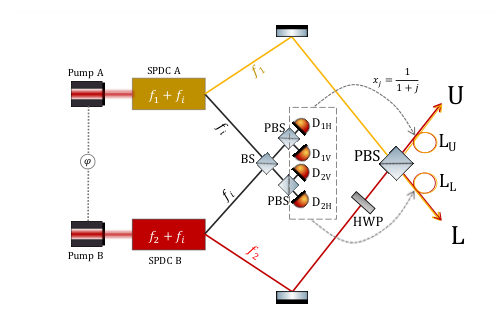
<figcaption class="paper-figure-caption"><b>Fig 3.</b> FIG. 3. Source and storage architecture for the multiphoton clock state. Two coherently driven SPDC sources produce signal–idler pairs with signal frequencies f1 and f2, respec- tively, while the idlers share the same frequency fi. The idlers are interfered in a linear-optical Bell-state analyzer, and the accepted BSM outcome heralds the corresponding signal su- perposition. A half-wave plate in the f2 signal arm, followed by the final PBS, maps the two polarization alternatives onto the path–frequency configurations X† j and Y † j . The BSM her- ald is fed forward to the couplers of the U and L storage loops, LU and LL, which are operated at the programmed loading strength xj = 1/(1 + j)....</figcaption>
</figure>
</div>

<p><strong>Summary.</strong> This paper details a novel photonic state fusion protocol designed to overcome the challenge of combining asynchronously generated quantum resources. By using active storage loops, the protocol effectively removes temporal labeling, enabling the construction of highly entangled, programmable NOON-type states. This advancement significantly improves the feasibility of building complex quantum devices like photonic clocks.</p>
<p><strong>Why it may be interesting.</strong> This work directly addresses resource limitations in quantum optics, providing a scalable theoretical framework for generating high-dimensional entangled states necessary for quantum metrology and quantum computation.</p>
<details>
<summary>Detailed structure</summary>
<p><strong>Main problem.</strong> The core challenge is enabling multiphoton quantum interference when the elementary photonic resources are generated probabilistically and asynchronously, requiring them to interfere in common temporal modes.</p>
<p><strong>Main result.</strong> The authors propose a fusion protocol using active storage loops that successfully removes the generation time label, allowing the construction of high-fidelity, programmable NOON-type entangled states.</p>
<p><strong>Method.</strong> The protocol involves successively loading heralded photonic blocks into active storage loops, conditioning on vacuum modes to ensure temporal mode matching, and synthesizing the target state via polynomial factorization.</p>
<p><strong>Model / system.</strong> The system utilizes photonic state fusion, employing active quantum memory loops and heralded sources (like SPDC) to generate and combine multiple entangled photonic blocks.</p>
<p><strong>Key observables.</strong> The detected rate ($R_{	ext{out},N}$) of the final entangled state, and the survival probability ($S_{N,n_b}$) of the stored state.</p>
<p><strong>Important parameters / regimes.</strong> The round-trip loss ($\lambda$), the probability of obtaining a usable block ($p_h$), and the coupling strength adjustments in the storage loop.</p>
<p><strong>Assumptions / limitations.</strong> The elementary resources must undergo the same complex loading transformation for both alternatives, and the analysis often assumes ideal loss-less conditions for the final state derivation.</p>
<p><strong>Figures summary.</strong> Figures illustrate the bosonic fusion scheme for clock-state implementation, showing process flow and mode-occupation amplitudes, and detail the source/storage architecture using SPDC sources and Bell-state analyzers.</p>
<p><strong>Paper structure.</strong> The paper builds from identifying the temporal mismatch problem, proposing the storage loop loading protocol, deriving the mathematical structure of the accumulated state via polynomial factorization, and finally applying this to estimate the achievable rate for photonic clock interferometry.</p>
</details>
<details>
<summary>Abstract</summary>
<p>Probabilistic photonic sources generate elementary states in different trials, whereas multiphoton protocols require them to interfere in common temporal modes. We propose a fusion protocol that overcomes this mismatch by successively loading independently heralded photonic states into active storage loops. Conditioning on vacuum in monitored dump modes selects events in which each newly generated state is transferred into the same circulating modes as the photons already stored, thereby removing its generation time label. Provided the two alternatives of each elementary state undergo the same loading transformation, the accumulated state is described by a product of programmable linear factors, allowing a target superposition to be constructed by polynomial factorization. Adjusting the storage loop coupling as the state grows substantially improves the loading efficiency, changing the faster-than-exponential penalty of fixed balanced couplers to exponential scaling. We apply the protocol to two-photon path--frequency states for photonic clock interferometry and estimate the detected rate including source waiting time and round-trip loss.</p>
</details>
<p><sub><a href="#top">↑ back to top</a></sub></p>

<p><a id="paper-2609.09608"></a></p>
<h3 id="convex-gaussianity-of-fermionic-gibbs-states-in-perturbation-theory"><a href="http://arxiv.org/abs/2609.09608v1">Convex-Gaussianity of fermionic Gibbs states in perturbation theory</a></h3>
<p><strong>Authors:</strong> Kaifeng Bu, Yuanjie Ren<br>
<strong>Type:</strong> theory · <strong>Category:</strong> strongly correlated electrons · <strong>PDF:</strong> <a href="https://arxiv.org/pdf/2609.09608v1">https://arxiv.org/pdf/2609.09608v1</a><br>
<strong>Analysis basis:</strong> full PDF text, analyzed in chunks
<strong>Topic relevance:</strong> <code>analog quantum simulation</code> <strong>3/5</strong> · <code>Keldysh / 2PI / non-Gaussian methods</code> <strong>1/5</strong></p>
<div class="figure-strip-hint">↔ Scroll figures horizontally</div>
<div class="paper-figures-scroll">
<figure class="paper-figure-card">

<figcaption class="paper-figure-caption"><b>Fig 1.</b> FIG. 1. The weak- and strong-coupling windows for the 2- dim Fermi–Hubbard model on a square lattice. The solid curve is read on the left axis and the dashed curve on the right axis. The asymptotic labels refer to the bounds before compactification.</figcaption>
</figure>
</div>

<p><strong>Summary.</strong> This work rigorously determines the temperature regimes where the Gibbs state of interacting fermions, modeled by the Fermi-Hubbard Hamiltonian, remains convex-Gaussian. By analyzing both weak and strong coupling limits, the authors provide precise bounds on the inverse temperature $eta$, offering deep insights into the structure of thermal states in correlated matter.</p>
<p><strong>Why it may be interesting.</strong> The determination of the parameter regimes ($eta$ windows) where quantum states retain simple mathematical structures (like convex-Gaussianity) is crucial for understanding quantum simulation feasibility and thermalization in strongly correlated systems.</p>
<details>
<summary>Detailed structure</summary>
<p><strong>Main problem.</strong> The paper investigates the conditions under which the Gibbs state of weakly perturbed interacting fermionic systems remains convex-Gaussian.</p>
<p><strong>Main result.</strong> It establishes explicit, non-trivial bounds on the inverse temperature ($eta$) for convex-Gaussianity in both weak-coupling (small $U$) and strong-coupling (small $t$) regimes of the Fermi-Hubbard model.</p>
<p><strong>Method.</strong> The analysis uses perturbation theory, expanding the Gibbs state in the Majorana basis, and relies on proving that the resulting expectation values belong to the Fermionic Gaussian Cone (FGC).</p>
<p><strong>Model / system.</strong> The primary model is the interacting fermionic system, specifically the Fermi-Hubbard model ($H = tH_{	ext{hop}} + U V_{	ext{int}}$) defined on a graph. The study analyzes the structure of the Gibbs state $
ho_eta(H)$.</p>
<p><strong>Key observables.</strong> Convex-Gaussianity of the Gibbs state $
ho_eta(H)$, which means $
ho_eta$ can be written as a convex combination of Gaussian fermionic states.</p>
<p><strong>Important parameters / regimes.</strong> Inverse temperature ($eta$), perturbation scale ($\epsilon$), hopping amplitude ($t$), and interaction strength ($U$).</p>
<p><strong>Assumptions / limitations.</strong> The Hamiltonian is assumed to be sparse, and the analysis often relies on small parameter expansions (weak or strong coupling) and specific bounds on local interaction strengths (e.g., $\Delta_{	ext{site}} \le 1/72$).</p>
<p><strong>Figures summary.</strong> Figure 1 illustrates the weak- and strong-coupling boundaries for the 2D Fermi-Hubbard model, showing the respective bounds for convex-Gaussianity.</p>
<p><strong>Paper structure.</strong> The paper develops results by first analyzing the general sparse Hamiltonian case (Theorem 3), then applying this framework to the weak-coupling limit of the Fermi-Hubbard model, and finally deriving a distinct mechanism for convex-Gaussianity in the strong-coupling limit.</p>
</details>
<details>
<summary>Abstract</summary>
<p>We study the structure of Gibbs states in weakly perturbed interacting fermionic systems. First, for a sparse Hamiltonian $H=H_0+V$ with a quadratic term $H_0$ and a non-quadratic perturbation $V$ of scale $ε$, we show that the Gibbs state $ρ_β$ decomposes into a convex combination of Gaussian states whenever the inverse temperature satisfies $β\le O(\log(1/ε))$. Moreover, we prove that this bound is asymptotically tight by establishing that $β\le Θ(\log(1/ε))$ is necessary for certain sparse Hamiltonians. This general framework applies directly to the weak-coupling (small-$\vert{}U\vert{}$) regime of the Fermi--Hubbard model with hopping $t$ and on-site interaction $U$ on any graph of maximum degree $D$. Complementarily, in the strong-coupling (small-$\vert{}t\vert{}$) regime, we show that the Gibbs state remains convex-Gaussian up to $β\le O\big(\vert{}U\vert{}^{-1}\log(\vert{}U\vert{}/(D\vert{}t\vert{}))\big)$, revealing a mechanism for convex-Gaussianity distinct from the weak-coupling setting.</p>
</details>
<p><sub><a href="#top">↑ back to top</a></sub></p>

<p><a id="paper-2609.10186"></a></p>
<h3 id="fast-accurate-and-scalable-fermionic-neural-networks-via-translation-equivariance"><a href="http://arxiv.org/abs/2609.10186v1">Fast, Accurate, and Scalable Fermionic Neural Networks via Translation Equivariance</a></h3>
<p><strong>Authors:</strong> David D. Dai, Yen-Ting Lin, Marin Soljačić<br>
<strong>Type:</strong> theory · <strong>Category:</strong> strongly correlated electrons · <strong>PDF:</strong> <a href="https://arxiv.org/pdf/2609.10186v1">https://arxiv.org/pdf/2609.10186v1</a><br>
<strong>Analysis basis:</strong> full PDF text, analyzed in chunks
<strong>Topic relevance:</strong> <code>analog quantum simulation</code> <strong>3/5</strong> · <code>methods for driven-dissipative</code> <strong>1/5</strong></p>
<div class="figure-strip-hint">↔ Scroll figures horizontally</div>
<div class="paper-figures-scroll">
<figure class="paper-figure-card">

<figcaption class="paper-figure-caption"><b>Fig 1.</b> FIG. 1. Medium-system comparison of TorFormer (TorF) and Psiformer (PF)’s expected energy and energy variance versus training steps. Error bars every 1K steps show inference energies estimated from fresh Markov chains, while the scatter plots show training estimates logged at each step. TorFormer is both faster and more accurate.</figcaption>
</figure>
<figure class="paper-figure-card">

<figcaption class="paper-figure-caption"><b>Fig 2.</b> FIG. 3. TorFormer’s energy per particle and Bragg peak height for sectors K = 3b1 and K = 0, plotted as a function of density parameter rs. The symmetry-protected crossing at rs = 39 causes a jump in the static structure factor, which is a finite-size realization of the phase transition.</figcaption>
</figure>
<figure class="paper-figure-card">
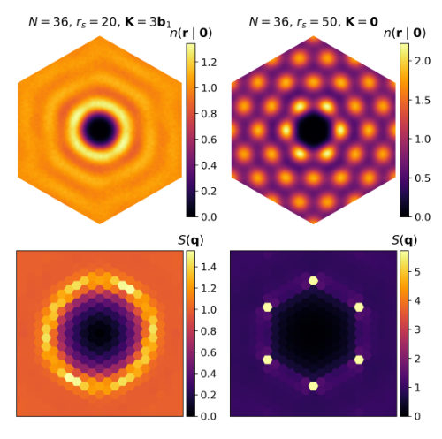
<figcaption class="paper-figure-caption"><b>Fig 3.</b> FIG. 2. Pair correlation function (top row) and static struc- ture factor (bottom row) for rs = 20.0 (left column) and rs = 50.0 (right column). The expected phase is apparent in both observables.</figcaption>
</figure>
<figure class="paper-figure-card">
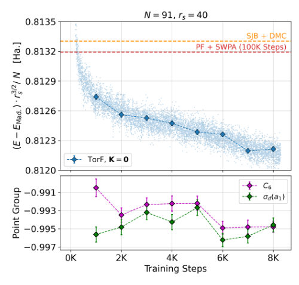
<figcaption class="paper-figure-caption"><b>Fig 4.</b> FIG. 4. N = 91, rs = 40.0 training curves. Top panel: energy comparison between TorFormer, the previous best NQS (Psi- former+SWPA), and Slater-Jastrow-backflow diffusion Monte Carlo. TorFormer is more accurate than Psiformer+SWPA while using less than a tenth of the training steps. Bottom: TorFormer is a near-exact eigenstate of the triangular lattice point-group generators with eigenvalue −1 for both.</figcaption>
</figure>
<figure class="paper-figure-card">
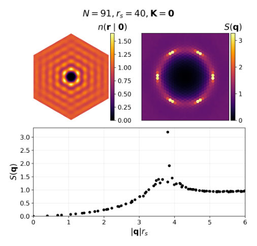
<figcaption class="paper-figure-caption"><b>Fig 5.</b> FIG. 5. N = 91, rs = 40.0 correlations. Top left: pair cor- relation. The pattern is smeared, because the model learned a superposition of the (6, 5) and (5, 6) crystal embeddings. Top right: 2D map of static structure factor. Each of the two crystal embeddings contributes a set of six Bragg peaks for twelve total. Bottom: symmetry-averaged static structure factor versus wavevector norm, showing the Bragg peak.</figcaption>
</figure>
</div>

<p><strong>Summary.</strong> This paper introduces TorFormer, a novel Neural Quantum State (NQS) designed using translation equivariance to solve the 2D electron gas problem. By enforcing symmetry constraints, TorFormer achieves significantly faster training convergence and higher accuracy than previous state-of-the-art methods. This demonstrates that symmetry-aware neural networks can provide an efficient and accurate tool for simulating strongly correlated quantum matter.</p>
<p><strong>Why it may be interesting.</strong> The focus on enforcing exact symmetries (translation equivariance) within a neural network framework provides a powerful, systematic way to constrain variational wavefunctions, which is highly relevant for developing robust quantum simulation tools applicable across different physical Hamiltonians.</p>
<details>
<summary>Detailed structure</summary>
<p><strong>Main problem.</strong> Developing fast, accurate, and scalable methods to solve the many-electron Schrödinger equation for strongly correlated systems.</p>
<p><strong>Main result.</strong> The proposed TorFormer significantly improves both training speed and final variational energy compared to previous Neural Quantum State (NQS) methods, achieving high accuracy for both Fermi liquid and Wigner crystal phases.</p>
<p><strong>Method.</strong> The authors employ Neural Quantum States (NQS) parameterized by a Transformer architecture (TorFormer) designed to be an exact eigenstate of the Hamiltonian's symmetries, specifically total momentum.</p>
<p><strong>Model / system.</strong> The study focuses on the 2D electron gas (2DEG) governed by the standard electron-electron interaction Hamiltonian. The model is tested across various interaction strengths ($r_s$) and system sizes ($N$).</p>
<p><strong>Key observables.</strong> Variational energy, energy variance, pair correlation function, and static structure factor $S(\mathbf{q})$.</p>
<p><strong>Important parameters / regimes.</strong> Interaction strength parameter $r_s$ (e.g., 30.0 to 40.0), System size $N$ (up to 91).</p>
<p><strong>Assumptions / limitations.</strong> The method assumes the Hamiltonian commutes with translation, allowing the enforcement of total momentum symmetry.</p>
<p><strong>Figures summary.</strong> Figures compare energy convergence (TorFormer vs. Psiformer) showing faster and better convergence; other figures illustrate the learned phase (Fermi liquid vs. Wigner crystal) via structure factors and energy vs. $r_s$ plots.</p>
<p><strong>Paper structure.</strong> The paper introduces the challenge of correlated electron simulation, proposes the symmetry-enforced TorFormer architecture, demonstrates its superior convergence and accuracy over benchmarks (Psiformer, SJB+DMC) across different physical regimes, and concludes with implications for scalable quantum simulation.</p>
</details>
<details>
<summary>Abstract</summary>
<p>We demonstrate that designing a neural quantum state to be an exact eigenstate of the Hamiltonian's symmetries significantly improves both training speed and final variational energy. For the 2D electron gas, we design TorFormer, a neural network wavefunction which is an exact eigenstate of the total momentum. TorFormer describes both the Fermi liquid and Wigner crystal with no supervision and significantly outperforms Psiformer-based references up to large system sizes. For $r_s = 30.0$ and $40.0$ at $N=91$, we compare TorFormer trained for $8\mathrm{K}$ steps against the previous best NQS, which required $100\mathrm{K}$ training steps. Our improvement to the total energy at $r_s = 40.0$, excluding the trivial Madelung part, is $0.12\%$---enormous compared to the tiny differences separating phases. Relative to Slater-Jastrow-backflow diffusion Monte Carlo, TorFormer's energy decrease is roughly $9.8$ times that of the previous best NQS. Our work demonstrates that neural quantum states can both accurately and efficiently solve large-scale problems.</p>
</details>
<p><sub><a href="#top">↑ back to top</a></sub></p>

<p><a id="paper-2609.10111"></a></p>
<h3 id="multiparameter-quantum-bounds-for-entanglement-assisted-aperture-synthesis"><a href="http://arxiv.org/abs/2609.10111v1">Multiparameter quantum bounds for entanglement-assisted aperture synthesis</a></h3>
<p><strong>Authors:</strong> Kalaga Madhav, Pieter Kok, Nic Scott<br>
<strong>Type:</strong> theory · <strong>Category:</strong> quantum information and computing · <strong>PDF:</strong> <a href="https://arxiv.org/pdf/2609.10111v1">https://arxiv.org/pdf/2609.10111v1</a><br>
<strong>Analysis basis:</strong> full PDF text, analyzed in chunks
<strong>Topic relevance:</strong> <code>interference shaping light</code> <strong>3/5</strong> · <code>quantum measurements</code> <strong>1/5</strong></p>
<div class="figure-strip-hint">↔ Scroll figures horizontally</div>
<div class="paper-figures-scroll">
<figure class="paper-figure-card">
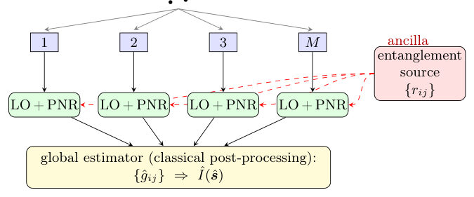
<figcaption class="paper-figure-caption"><b>Fig 1.</b> Figure 1. Entanglement-assisted aperture synthesis and the achievable receiver (Sec. 3). (1) Each of M telescopes collects starlight. An entanglement source distributes shared single-photon-entangled ancillas, rij pairs to baseline (i, j). (2) At each station a local receiver—linear optics (a quantum Fourier transform) and photon-number-resolving (PNR) detection—realizes the per-baseline factor f(r) of Eq. (5) using local operations and classical communication (LOCC). (3) A global classical estimator combines the outcomes into visibilities {ˆgij} and the image ˆI(ˆs); approaching the Holevo bound is expected to require this stage to act jointly across baselines (Sec. 5).</figcaption>
</figure>
<figure class="paper-figure-card">
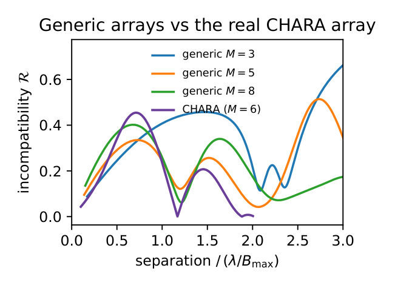
<figcaption class="paper-figure-caption"><b>Fig 2.</b> Figure 2. Incompatibility R versus separation in units of the resolution element λ/Bmax, for generic M-station arrays and the real CHARA array. R = 0 (desirable) means the SLD bound is attainable and per-baseline processing is optimal; R &gt; 0 means an unavoidable multiparameter penalty [Holevo bound ≤(1 + R)× SLD]. A point source gives R = 0; every extended-source model examined gives R &gt; 0. Numerical details in App. A.</figcaption>
</figure>
<figure class="paper-figure-card">
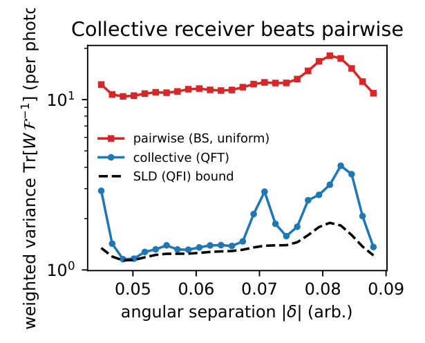
<figcaption class="paper-figure-caption"><b>Fig 3.</b> Figure 3. Weighted parameter variance Tr[WJ −1] (per photon) versus source separation for an explicit collective (global QFT) receiver, an explicit pairwise (beam-splitter) receiver, and the SLD (QFI) bound, for a two-point source on a generic M = 6 array. The collective receiver tracks the SLD bound to within ∼7%; the pairwise receiver is ∼10× worse. App. A.</figcaption>
</figure>
<figure class="paper-figure-card">
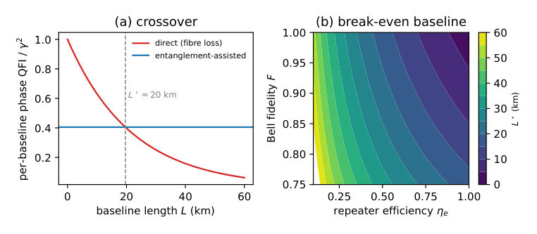
<figcaption class="paper-figure-caption"><b>Fig 4.</b> Figure 4. Noisy-resource advantage threshold. (a) Per-baseline phase QFI versus baseline length L: direct interferometry decays with fibre loss, while entanglement assistance is set by the (length-independent) repeater efficiency; they cross at L⋆≈20 km. (b) Break-even baseline L⋆of Eq. (11) over the Bell-fidelity/repeater-efficiency plane.</figcaption>
</figure>
<figure class="paper-figure-card">
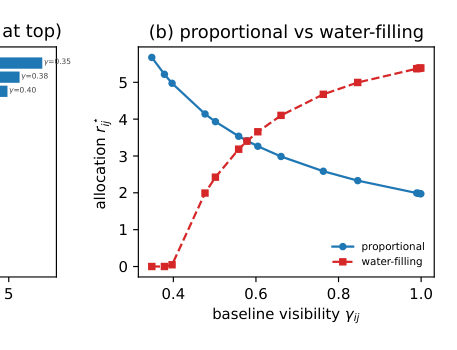
<figcaption class="paper-figure-caption"><b>Fig 5.</b> Figure 5. Entanglement allocation on the CHARA array (15 baselines, two-point source at 1 mas). (a) Proportional rule (12) per baseline, sorted by visibility (lowest γij on top, annotated). (b) Proportional versus true water-filling allocation. Numerical details in App. A.</figcaption>
</figure>
</div>

<p><strong>Summary.</strong> This work develops the quantum theory for multi-parameter estimation in large-scale optical interferometry using entanglement assistance. It shows that collective measurements are superior to pairwise ones and establishes a critical baseline length where quantum repeaters become necessary. The results provide actionable design guidelines for next-generation quantum sensing arrays.</p>
<p><strong>Why it may be interesting.</strong> It provides rigorous quantum information-theoretic bounds and concrete design targets for quantum sensing in large-scale optical arrays, directly relevant to quantum optics and quantum networking.</p>
<details>
<summary>Detailed structure</summary>
<p><strong>Main problem.</strong> The paper formulates the multiparameter quantum estimation problem for an M-station array using entanglement-assisted optical interferometry, moving beyond single-baseline analyses.</p>
<p><strong>Main result.</strong> The optimal collective receiver significantly outperforms pairwise receivers, and a break-even baseline exists beyond which repeater-distributed entanglement surpasses direct transmission.</p>
<p><strong>Method.</strong> The authors use quantum Fisher Information (QFI) analysis, comparing the Holevo bound to the SLD bound, and solving a convex program for optimal entanglement resource allocation.</p>
<p><strong>Model / system.</strong> The system is an optical interferometry setup involving an M-station array imaging an extended scene, modeled using quantum state estimation theory.</p>
<p><strong>Key observables.</strong> Quantum Fisher Information (QFI) matrix, mean Uhlmann curvature, weighted parameter variance, and the incompatibility measure R.</p>
<p><strong>Important parameters / regimes.</strong> Baseline length (e.g., $\sim 20$ km for the break-even threshold), number of stations (M), and entanglement budget (RE).</p>
<p><strong>Assumptions / limitations.</strong> The analysis assumes the reduction of the multimode QFI to a single-photon problem and models entanglement restoration via the two-station weak-thermal state.</p>
<p><strong>Figures summary.</strong> Figures illustrate the comparison of weighted parameter variance for different receivers (collective vs. pairwise), the dependence of the break-even baseline on loss, and the optimal allocation of entanglement resources.</p>
<p><strong>Paper structure.</strong> The paper progresses by formulating the multiparameter estimation problem, deriving the reduction lemma, analyzing the achievable bounds (Holevo vs. SLD), comparing receiver strategies, and finally determining the optimal resource allocation strategy.</p>
</details>
<details>
<summary>Abstract</summary>
<p>Entanglement-assisted optical interferometry promises diffraction-limited imaging over baselines where light cannot be physically combined, but existing theory treats only a single visibility on one two-station baseline. This work formulates the multiparameter estimation problem for an M-station array imaging an extended scene. A reduction lemma shows that the multimode quantum Fisher information (QFI) equals the mean photon number times the QFI of a single delocalized photon, collapsing the problem to a finite-dimensional one. The local photon-number superselection rule (SSR) erases all phase information from the bare state, while shared entanglement restores a fraction f(r)=r/(1+r) of the QFI on a baseline supplied with r pairs -- a factor shown to be achievable, since the reduced two-mode state of any pair is exactly the two-station weak-thermal state. The QFI matrix and its mean Uhlmann curvature reveal numerically that a point source is measurement-compatible, whereas for every extended-source model examined it is incompatible, the Holevo bound exceeding the symmetric-logarithmic-derivative (SLD) bound by up to ~74%. An explicit collective receiver -- a global mode-sorting (quantum Fourier transform) measurement -- then attains a weighted variance within ~7% of the SLD bound and roughly an order of magnitude below an explicit pairwise receiver, and a noisy-resource advantage threshold gives the break-even baseline (~20 km for near-term parameters) beyond which repeater-distributed entanglement beats direct transmission. Finally, the optimal allocation of a finite entanglement budget is a convex program with a closed-form proportional (square-root-law) solution favoring low-visibility baselines. These results recast quantum aperture synthesis as collective multiparameter estimation and give concrete design targets, illustrated on the CHARA array.</p>
</details>
<p><sub><a href="#top">↑ back to top</a></sub></p>

<p><a id="paper-2609.09654"></a></p>
<h3 id="perfect-state-transfer-from-a-localised-two-excitation-state-to-a-dicke-state-via-static-spin-network-hamiltonians"><a href="http://arxiv.org/abs/2609.09654v1">Perfect State Transfer from a Localised Two-Excitation State to a Dicke State via Static Spin-Network Hamiltonians</a></h3>
<p><strong>Authors:</strong> Soumyojyoti Dutta<br>
<strong>Type:</strong> theory · <strong>Category:</strong> quantum information and computing · <strong>PDF:</strong> <a href="https://arxiv.org/pdf/2609.09654v1">https://arxiv.org/pdf/2609.09654v1</a><br>
<strong>Analysis basis:</strong> full PDF text, analyzed in chunks
<strong>Topic relevance:</strong> <code>analog quantum simulation</code> <strong>3/5</strong> · <code>Dicke superradiance</code> <strong>1/5</strong></p>
<div class="figure-strip-hint">↔ Scroll figures horizontally</div>
<div class="paper-figures-scroll">
<figure class="paper-figure-card">

<figcaption class="paper-figure-caption"><b>Fig 1.</b> FIG. 1. The cubic Q(z) for four system sizes, plotted as sgn(Q) |Q|1/3 so that the crossing is visible against the cu- bic growth, and normalised to unit maximum on the window shown. The dashed line marks z = −2, the boundary be- tween real and complex x = q/p; x is real only in the shaded regions |z| ≥2. In every case Q(−2) &lt; 0 (Lemma 4), while A &lt; 0 — which Lemma 5 supplies for n large enough — makes Q(z) →+∞as z →−∞. A real root z∗&lt; −2 follows; the markers show it.</figcaption>
</figure>
<figure class="paper-figure-card">
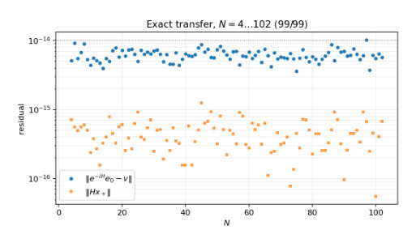
<figcaption class="paper-figure-caption"><b>Fig 2.</b> FIG. 2. Transfer residual ∥e−iHe0 −v∥and eigenvector resid- ual ∥Hx+∥for the Hamiltonian produced by the construction of Theorem 1, for every N = 4, . . . , 102. All 99 cases succeed at machine precision. These are an independent check of a symbolic construction, not evidence for the theorem.</figcaption>
</figure>
<figure class="paper-figure-card">

<figcaption class="paper-figure-caption"><b>Fig 3.</b> FIG. 3. Numerical behaviour of the construction across N. For a given n the sextic may have several admissible roots; here one is fixed by the convention of taking the most negative z∗&lt; −2 for the smallest odd n with A &lt; 0. This is a numerical convention and not a distinguished branch — the theorem asserts only that some admissible root exists — and it is discontinuous where n increments. Left: the root z∗stays below −2 as required. Centre: the corresponding coupling ratio x∗= q/p, on the |x| ≥1 representative of the reciprocal pair {x∗, 1/x∗} exchanged by the p ↔q symmetry of Eq. (13). Right: the smallest odd n satisfying A &lt; 0 remains small, taking only the values 3, 5, 7, 9 over this...</figcaption>
</figure>
</div>

<p><strong>Summary.</strong> This theoretical paper constructs a specific, time-independent spin Hamiltonian that perfectly transfers a localized two-excitation state to the symmetric Dicke state for any system size $N \ge 4$. The proof is highly algebraic, solving a constrained inverse spectral problem derived from the spin-network structure. It offers a powerful, static method for quantum state engineering in many-body systems.</p>
<p><strong>Why it may be interesting.</strong> This work provides a constructive, static Hamiltonian approach to quantum state transfer, bypassing the need for time-dependent controls or measurements, which is highly relevant for designing robust quantum hardware protocols.</p>
<details>
<summary>Detailed structure</summary>
<p><strong>Main problem.</strong> The paper aims to construct a time-independent, excitation-preserving spin Hamiltonian that achieves Perfect State Transfer (PST) from a localized two-excitation state to the symmetric two-excitation Dicke state for any system size $N \ge 4$.</p>
<p><strong>Main result.</strong> The authors prove the existence of such a Hamiltonian for all $N \ge 4$ by solving a constrained inverse spectral problem derived from the spin-network structure.</p>
<p><strong>Method.</strong> The method involves exploiting $S_{N-2}$ symmetry to reduce the dynamics to a 4D subspace, leading to an inverse spectral problem that is solved algebraically by reducing a reciprocal sextic polynomial to a cubic equation.</p>
<p><strong>Model / system.</strong> The system is an $N$-qubit spin chain governed by a real, time-independent Hamiltonian $H = \sum_{i<j} J_{ij} (\sigma^+_i \sigma^-_j + \sigma^+_j \sigma^-_i) + \sum_i \epsilon_i n_i$. The dynamics are restricted to the two-excitation sector.</p>
<p><strong>Key observables.</strong> The transfer fidelity, which must equal 1, and the existence of a real root $z < -2$ for the derived cubic polynomial.</p>
<p><strong>Important parameters / regimes.</strong> System size $N \ge 4$, the odd integer parameter $n$ used in the Hamiltonian family, and the coupling ratios derived from the spectral problem.</p>
<p><strong>Assumptions / limitations.</strong> The Hamiltonian must arise from a specific excitation-preserving spin-network form, making this a 'constrained analogue' of PST, and the result is proven only for two excitations ($k=2$).</p>
<p><strong>Figures summary.</strong> Figures illustrate the required sign change of the polynomial $Q(z)$ for a real root $z^* < -2$ across various system sizes, and show numerical validation of the transfer fidelity for $N=4$ to $102$.</p>
<p><strong>Paper structure.</strong> The paper establishes the physical goal, reduces the problem using symmetry to a 4D subspace, formulates the inverse spectral problem leading to a reciprocal sextic, and solves this by substitution to a cubic equation, proving existence symbolically.</p>
</details>
<details>
<summary>Abstract</summary>
<p>I construct a family of time-independent, excitation-preserving spin Hamiltonians that realises perfect state transfer from a localised two-excitation state to the symmetric two-excitation Dicke state, for every system size $N \ge 4$. The Hamiltonian has the physical form $H = \sum_{i<j} J_{ij} (σ_i^+ σ_j^- + σ_j^+ σ_i^-) + \sum_i ε_i n_i$ with real couplings, and satisfies $e^{-iHt} |110\cdots0\rangle = e^{iφ} |D_N^{(2)}\rangle$ at a finite time. The construction exploits an $S_{N-2}$ permutation symmetry acting on the initially unoccupied spins, which reduces the dynamics to a four-dimensional invariant subspace. Requiring $(|ψ_0\rangle + |D_N^{(2)}\rangle)/2$ to be a zero eigenvector determines the on-site energies in closed form and leaves three coupling parameters free. The remaining inverse spectral problem reduces to two polynomial equations in two dimensionless coupling ratios; eliminating one ratio yields a degree-six reciprocal polynomial, which the substitution $z = x + x^{-1}$ converts to a cubic. For the spectral family $(-n,-1,1)$, with $n$ an odd integer, an explicit factorisation of the leading coefficient together with a boundary evaluation at $z=-2$ shows that for every $N \ge 4$ an odd $n$ can be chosen large enough that a real root with $z < -2$ exists; a subresultant argument supplies a real lift of that root to the original system. The existence proof is entirely symbolic and does not rely on numerical optimisation; direct propagation is used only as independent validation. The result is a constrained analogue of perfect state transfer: unlike the general real-state problem, where an unconstrained real symmetric matrix suffices, here the Hamiltonian is required to arise from an excitation-preserving spin-network form.</p>
</details>
<p><sub><a href="#top">↑ back to top</a></sub></p>

<p><a id="paper-2609.10541"></a></p>
<h3 id="symplectic-hopf-insulator-delicate-topology-in-bosonic-bogoliubov-de-gennes-systems"><a href="http://arxiv.org/abs/2609.10541v1">Symplectic Hopf Insulator: Delicate Topology in Bosonic Bogoliubov-de Gennes Systems</a></h3>
<p><strong>Authors:</strong> Isaac Tesfaye, Giandomenico Palumbo<br>
<strong>Type:</strong> theory · <strong>Category:</strong> quantum gases · <strong>PDF:</strong> <a href="https://arxiv.org/pdf/2609.10541v1">https://arxiv.org/pdf/2609.10541v1</a><br>
<strong>Analysis basis:</strong> full PDF text, analyzed in chunks
<strong>Topic relevance:</strong> <code>analog quantum simulation</code> <strong>3/5</strong> · <code>Keldysh / 2PI / non-Gaussian methods</code> <strong>1/5</strong></p>
<div class="figure-strip-hint">↔ Scroll figures horizontally</div>
<div class="paper-figures-scroll">
<figure class="paper-figure-card">
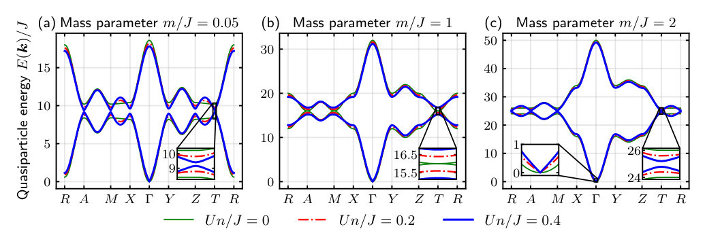
<figcaption class="paper-figure-caption"><b>Fig 1.</b> FIG. 1. BBdG Quasiparticle energy spectrum E(k) of the symplectic Hopf insulator model (6) for different values of the mass parameter m/J ∈{0.05, 1, 2} (a)-(c) and interaction strength Un/J ∈{0, 0.2, 0.4} (colored lines) along a high-symmetry path, R–A–M–X–Γ–Y –Z–T–R, in the first Brillouin zone. The insets around T in (a) and (c) show how the Hopf-topology-preserving energy gap stays open but shrinks with increasing interaction strength Un/J while in (b) at the critical point m/J = 1 (gapless for Un/J = 0) a topologically trivial gap opens for Un/J &gt; 0 (cf. Fig. 2). The inset around the Γ point in (c) shows the emerging linear Goldstone mode for increasing Un/J. The high-symmetry points...</figcaption>
</figure>
<figure class="paper-figure-card">
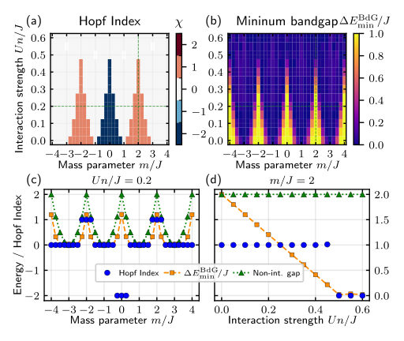
<figcaption class="paper-figure-caption"><b>Fig 2.</b> FIG. 2. (a) Phase diagram of the symplectic Hopf insulator model (6). Symplectic Hopf index χ (13) of the upper Bogoli- ubov particle band as a function of the mass parameter m and interaction strength Un. (b) Minimum Bogoliubov-de Gennes (BdG) quasiparticle energy band gap ∆EBdG min over the same parameter range as in (a). Gap closings where ∆EBdG min →0 indicate topological phase transitions between regions of dis- tinct symplectic Hopf invariants. Slices through the phase di- agram above at fixed interaction strength Un/J = 0.2 (c) and fixed mass parameter m/J = 2 (d), as indicated by the green- colored dashed lines in (a) and (b). The symplectic Hopf in- dex χ (blue circles) and minimum...</figcaption>
</figure>
<figure class="paper-figure-card">
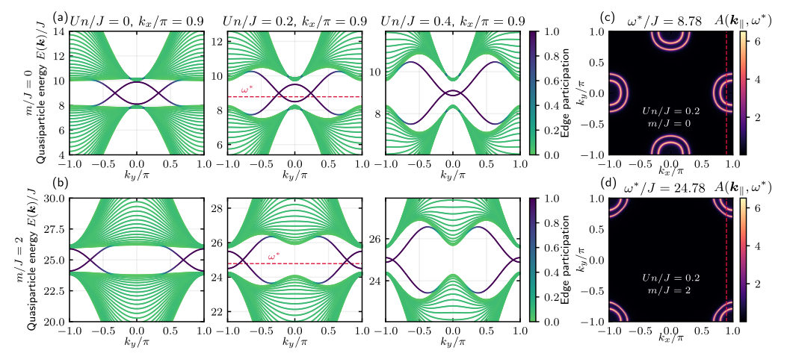
<figcaption class="paper-figure-caption"><b>Fig 3.</b> FIG. 3. (a)-(b) BBdG Quasiparticle energy spectrum E(k) of the symplectic Hopf insulator model (6) as function of ky for fixed kx/π = 0.9 for open boundary conditions along the z-direction for two mass parameter m/J = 0 (a) and m/J = 2 (b) (rows) and different interaction strengths Un/J ∈{0, 0.2, 0.4} (columns). The color scale indicates the symplectic edge participation pj(k∥) (14), i.e., (the fraction of) the state’s probability living on the surface with the correct τz-norm with dark (bright) colors indicating localization on the surface (bulk) of the system. The bulk-boundary correspondence in the presence of finite interactions is confirmed by the appearance of topologically protected...</figcaption>
</figure>
</div>

<p><strong>Summary.</strong> This work introduces the symplectic Hopf insulator, a novel topological phase realized in weakly interacting bosonic systems modeled by a generalized Bose-Hubbard Hamiltonian. The authors prove the existence of an integer-quantized symplectic Hopf invariant, demonstrating that this topology is robust yet delicate. This advances the understanding of topological phases in bosonic systems beyond standard classifications.</p>
<p><strong>Why it may be interesting.</strong> It applies advanced topological concepts (Hopf invariant, Krein spaces) to bosonic systems, directly connecting to the physics of Bose-Einstein Condensates and superfluidity, which are key areas in AMO physics.</p>
<details>
<summary>Detailed structure</summary>
<p><strong>Main problem.</strong> To construct and analyze a realization of Hopf topology within bosonic Bogoliubov-de Gennes (BBdG) systems, extending topological classification beyond the tenfold-way framework.</p>
<p><strong>Main result.</strong> The authors establish the symplectic Hopf insulator as a robust yet delicate topological phase characterized by an integer-quantized symplectic Hopf invariant. This topology is protected by in-gap surface states at boundaries.</p>
<p><strong>Method.</strong> The analysis involves defining and calculating the symplectic Hopf invariant using the BBdG Hamiltonian, which is derived from a Bose-Hubbard model via the Bogoliubov approximation.</p>
<p><strong>Model / system.</strong> The system is a microscopic Bose-Hubbard generalization of the Moore-Ran-Wen model, analyzed in the Bogoliubov approximation to yield a symplectic BBdG Hamiltonian. This describes weakly interacting bosonic systems, relevant to Bose-Einstein Condensates.</p>
<p><strong>Key observables.</strong> Symplectic Hopf invariant ($\chi$), quasiparticle energy spectrum $E(\mathbf{k})$, and topologically protected in-gap surface states.</p>
<p><strong>Important parameters / regimes.</strong> Weak on-site interaction strength ($U$), mass parameter ($m$), and lattice structure parameters ($J$).</p>
<p><strong>Assumptions / limitations.</strong> The Bogoliubov approximation is used, and the analysis relies on the system admitting a paraunitary (symplectic) Bogoliubov transformation acting on a Krein inner product space.</p>
<p><strong>Figures summary.</strong> Figure 1 illustrates the BBdG quasiparticle energy spectrum $E(\mathbf{k})$ along high-symmetry paths, showing the gap behavior as a function of mass and interaction parameters.</p>
<p><strong>Paper structure.</strong> The paper develops the theory by defining the BBdG Hamiltonian, introducing the symplectic Hopf invariant, calculating its quantization, and demonstrating the bulk-boundary correspondence via surface state analysis.</p>
</details>
<details>
<summary>Abstract</summary>
<p>Recent advances in topological phases have highlighted the role of symplectic (Krein-space) topology in the classification of bosonic Bogoliubov-de Gennes (BBdG) systems. In this work, we construct a BBdG realization of Hopf topology, which we dub the symplectic Hopf insulator, starting from a microscopic Bose-Hubbard generalization of the Moore-Ran-Wen model with weak on-site interactions treated within a Bogoliubov approximation. The resulting BBdG system admits a symplectic Hopf invariant, which we show to be integer-quantized for isolated bands. We establish that this topology is intrinsically delicate, requiring exactly two bosonic modes per unit cell, while remaining robust against weak interactions over a range of mass parameters. Upon terminating the three-dimensional insulator at a boundary, we find topologically protected in-gap surface states at finite excitation energy, whose protection is itself delicate. Our results establish the symplectic Hopf insulator as a robust yet delicate topological phase in weakly interacting bosonic systems lying beyond the tenfold-way classification.</p>
</details>
<p><sub><a href="#top">↑ back to top</a></sub></p>

<p><a id="paper-2609.10013"></a></p>
<h3 id="a-separation-between-full-rank-pvm-and-assumption-free-self-testing"><a href="http://arxiv.org/abs/2609.10013v1">A Separation between Full-Rank PVM and Assumption-free Self-Testing</a></h3>
<p><strong>Authors:</strong> Ranyiliu Chen<br>
<strong>Type:</strong> theory · <strong>Category:</strong> quantum information and computing · <strong>PDF:</strong> <a href="https://arxiv.org/pdf/2609.10013v1">https://arxiv.org/pdf/2609.10013v1</a><br>
<strong>Analysis basis:</strong> full PDF text, analyzed in chunks
<strong>Topic relevance:</strong> <code>quantum measurements</code> <strong>3/5</strong></p>
<div class="figure-strip-hint">↔ Scroll figures horizontally</div>
<div class="paper-figures-scroll">
<figure class="paper-figure-card">

<figcaption class="paper-figure-caption"><b>Fig 1.</b> Low-resolution page preview, page 2</figcaption>
</figure>
<figure class="paper-figure-card">
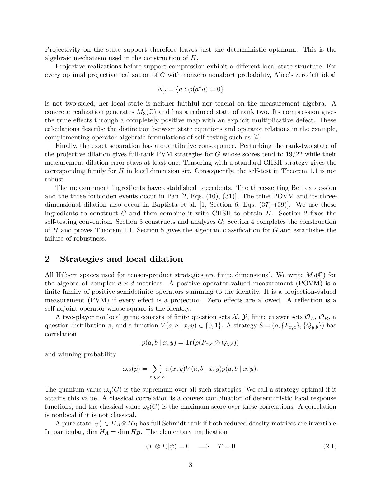
<figcaption class="paper-figure-caption"><b>Fig 2.</b> Low-resolution page preview, page 3</figcaption>
</figure>
<figure class="paper-figure-card">
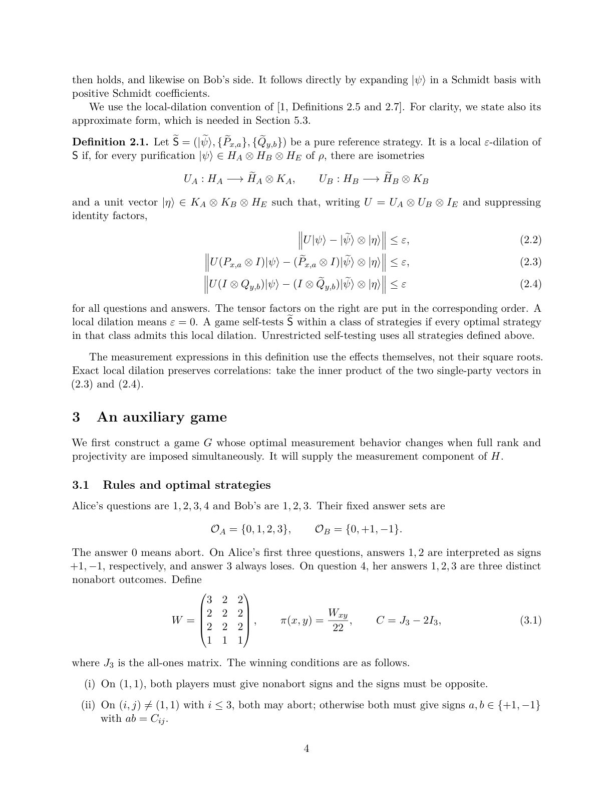
<figcaption class="paper-figure-caption"><b>Fig 3.</b> Low-resolution page preview, page 4</figcaption>
</figure>
<figure class="paper-figure-card">

<figcaption class="paper-figure-caption"><b>Fig 4.</b> Low-resolution page preview, page 5</figcaption>
</figure>
<figure class="paper-figure-card">
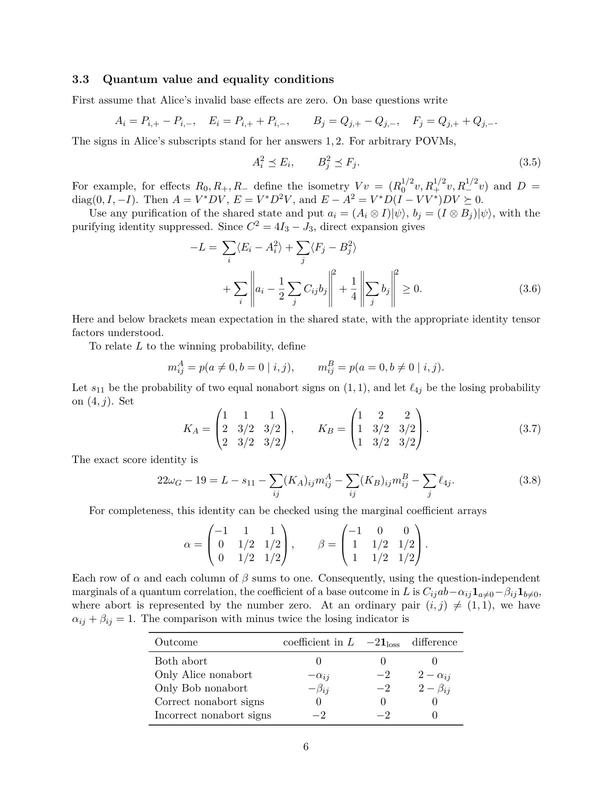
<figcaption class="paper-figure-caption"><b>Fig 5.</b> Low-resolution page preview, page 6</figcaption>
</figure>
</div>

<p><strong>Summary.</strong> This paper resolves a conjecture regarding the self-testing of entangled quantum strategies by constructing a nonlocal game $H$. It proves that restricting the measurements to pure, full-rank projective measurements (PVMs) is not robust, as a nonprojective measurement can achieve superior correlations. The work relies on detailed algebraic analysis of optimal correlation structures.</p>
<p><strong>Why it may be interesting.</strong> This work provides a rigorous, algebraic demonstration of the limitations of assuming measurement projectivity in quantum information tasks, which is crucial for understanding the fundamental boundaries of quantum correlations.</p>
<details>
<summary>Detailed structure</summary>
<p><strong>Main problem.</strong> The paper investigates the robustness of self-testing protocols for maximally entangled qubit strategies when restricting measurements to pure full-Schmidt-rank Projective Measurements (PVMs).</p>
<p><strong>Main result.</strong> It proves that the full-rank PVM self-test is not robust because an optimal strategy using a nonprojective measurement can achieve correlations unattainable by any pure full-rank PVM strategy.</p>
<p><strong>Method.</strong> The authors construct a nonlocal game $H$ by combining the CHSH game with an auxiliary game $G$. They use algebraic classification of optimal correlations and the concept of local dilation to establish the separation.</p>
<p><strong>Model / system.</strong> The study uses a nonlocal game $H$ played on a shared maximally entangled qubit state $|\Phi^+
angle$ on $\mathbb{C}^2 \otimes \mathbb{C}^2$. The analysis involves comparing correlations derived from PVMs versus those from general measurements.</p>
<p><strong>Key observables.</strong> Quantum and classical values of the game $H$ ($\omega_q(H)$ vs $\omega_c(H)$), and the optimal correlation values for the auxiliary game $G$ ($19/22$).</p>
<p><strong>Important parameters / regimes.</strong> The parameter $t \in (0, 1)$ controlling the deviation from a reference state $    ext{S}_0$, and the structure of the local state algebra (e.g., $\mathbb{C} \oplus M_2(\mathbb{C})$).</p>
<p><strong>Assumptions / limitations.</strong> The core assumption being tested is the simultaneous requirement of full rank and projectivity on the measurement effects. The analysis also uses the assumption of block-diagonal measurements for the abort/nonabort subspaces.</p>
<p><strong>Paper structure.</strong> The paper first analyzes a simpler game $G$ to show that full-rank PVMs constrain the optimal correlations to a specific subset. It then combines $G$ with the CHSH game to construct $H$, demonstrating the separation between the PVM-restricted set and the general quantum set.</p>
</details>
<details>
<summary>Abstract</summary>
<p>We construct a nonlocal game that self-tests a maximally entangled qubit strategy among pure full-Schmidt-rank projective strategies, but admits an inequivalent optimum using one nonprojective measurement. This resolves a conjecture of Baptista et al. on imposing full rank and projectivity simultaneously. The construction combines CHSH with an auxiliary game $G$ that forces deterministic answers under these assumptions and admits a trine POVM optimum without them. We classify the optimal correlations of $G$ as a line segment parametrized by the tracial states of $\mathbb{C}\oplus M_2(\mathbb{C})$. Projectivity on the state support removes the matrix summand, whereas projective dilations with nonzero nonabort probability have a nontracial local state whose zero left ideal is not two-sided. Finally, a family in local dimension six shows that the full-rank PVM self-test is not robust.</p>
</details>
<p><sub><a href="#top">↑ back to top</a></sub></p>

<p><a id="paper-2609.09994"></a></p>
<h3 id="coded-clifford-measurements-for-multiqubit-magic-state-cultivation"><a href="http://arxiv.org/abs/2609.09994v1">Coded Clifford Measurements for Multiqubit Magic-State Cultivation</a></h3>
<p><strong>Authors:</strong> Gunsik Min, Jun Heo<br>
<strong>Type:</strong> theory · <strong>Category:</strong> quantum information and computing · <strong>PDF:</strong> <a href="https://arxiv.org/pdf/2609.09994v1">https://arxiv.org/pdf/2609.09994v1</a><br>
<strong>Analysis basis:</strong> full PDF text, analyzed in chunks
<strong>Topic relevance:</strong> <code>quantum measurements</code> <strong>3/5</strong></p>
<div class="figure-strip-hint">↔ Scroll figures horizontally</div>
<div class="paper-figures-scroll">
<figure class="paper-figure-card">

<figcaption class="paper-figure-caption"><b>Fig 1.</b> FIG. 1. Logical-level code–cultivation correspondence. A third-level resource basis provides commuting Clifford checks C(v). Choosing check labels vt defines the measurement schedule G = [v1 · · · vn] and the valid record code RG = {aG}. Postselection accepts only valid records; a wrong accepted branch therefore requires a nonzero displacement e ∈RG, so the record-code distance dG sets the accepted record-error order, Pwv = O(qdG).</figcaption>
</figure>
<figure class="paper-figure-card">
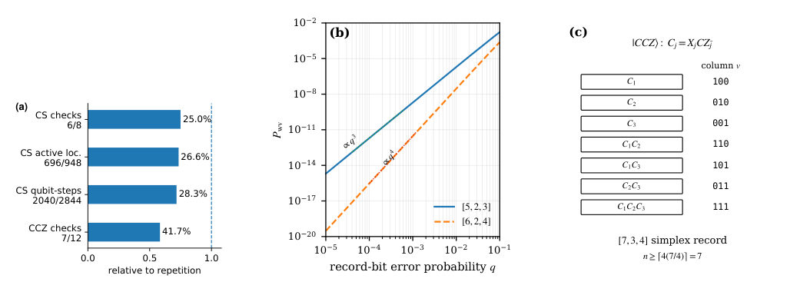
<figcaption class="paper-figure-caption"><b>Fig 2.</b> FIG. 2. Consequences of coded Clifford records. (a) For distance four, coding reduces the CS schedule from 8 to 6 logical checks, from 948 to 696 compiled-core active locations, and from 2844 to 2040 active-qubit gate steps; the CCZ schedule falls from 12 to 7 logical checks. (b) The optimal [5, 2, 3] and [6, 2, 4] two-bit records give cubic and quartic wrong-acceptance scaling. (c) The [7, 3, 4] CCZ simplex schedule reaches the minimum length allowed for any binary record.</figcaption>
</figure>
<figure class="paper-figure-card">
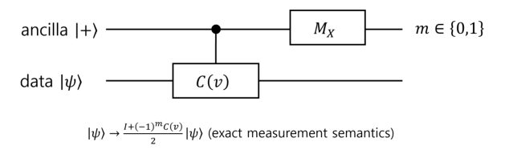
<figcaption class="paper-figure-caption"><b>Fig 3.</b> FIG. 1. Exact semantics of one logical record measurement. The circuit realizes the projectors in Eq. (48); it is an algebraic reference circuit, not a claim of low fault-tolerant overhead.</figcaption>
</figure>
<figure class="paper-figure-card">

<figcaption class="paper-figure-caption"><b>Fig 4.</b> FIG. 2. Live Steane-boundary diagnostics after removing the final ideal code-space projection. Left: record-and-midpoint acceptance. Right: mean weight of the canonical two-block Steane boundary representative among accepted shots. Error bars show one standard error. These are boundary-quality diagnostics, not full-factory logical-error estimates.</figcaption>
</figure>
</div>

<p><strong>Summary.</strong> This work develops a theoretical framework showing how coding theory can be used to protect the measurement record during magic-state cultivation for fault-tolerant quantum computation. By mapping error detection to linear codes, the authors demonstrate that the required physical resources are significantly reduced compared to naive repetition schemes. This provides a pathway for building more resource-efficient quantum circuits.</p>
<p><strong>Why it may be interesting.</strong> While focused on quantum computation, the rigorous application of coding theory to physical measurement constraints provides a powerful mathematical framework applicable to any physical system where measurement outcomes must be robustly correlated.</p>
<details>
<summary>Detailed structure</summary>
<p><strong>Main problem.</strong> The paper addresses the need for efficient, fault-tolerant methods to cultivate magic quantum states required for computation by measuring logical Clifford symmetries.</p>
<p><strong>Main result.</strong> Coded Clifford measurements provide a resource-efficient way to protect the measurement record, achieving significant reductions in required physical resources compared to independent repetition schemes.</p>
<p><strong>Method.</strong> The authors map the error detection problem onto the theory of binary linear codes, using commuting Hermitian Clifford observables to define the measurement schedule via a generator matrix.</p>
<p><strong>Model / system.</strong> The model involves multiqubit magic-state cultivation, where the error protection is encoded in the classical record derived from measuring logical Clifford symmetries ($C(\mathbf{v})$) associated with third-level Clifford-hierarchy unitaries ($U \in \mathcal{C}_3$).</p>
<p><strong>Key observables.</strong> Code distance ($d_G$), active locations, qubit-steps, and the error probability scaling $P_{wv} = O(q^{d_G})$.</p>
<p><strong>Important parameters / regimes.</strong> Target distance $d=4$, resource reduction percentages (e.g., 26.6% reduction in active locations).</p>
<p><strong>Assumptions / limitations.</strong> The analysis assumes a specific noise model for the record layer and distinguishes between algebraically available logical gates and physically fault-tolerant implementations.</p>
<p><strong>Figures summary.</strong> Figures illustrate the logical-level code–cultivation correspondence, quantifying resource reductions (e.g., 28.3% gate-step reduction) for distance four coding, and showing the minimum length of the $[7, 3, 4]$ simplex record.</p>
<p><strong>Paper structure.</strong> The paper develops the logical-level code–cultivation correspondence, derives the necessary observables $C(\mathbf{v})$, establishes the code-theoretic bounds (Plotkin bound), and finally optimizes the minimum-cost schedule by solving an integer covering problem.</p>
</details>
<details>
<summary>Abstract</summary>
<p>Magic-state cultivation suppresses errors by measuring logical Clifford symmetries and discarding inconsistent outcomes. For an entangled resource several branches are accepted, so the retained branch carries a multibit classical record whose corruption produces a logical-frame error. We show that this record layer is exactly a binary linear code. For any third-level Clifford-hierarchy unitary $U \in \mathcal{C}_3$, the branches $UZ(a)|+\rangle^{\otimes k}$ are resolved by commuting Hermitian Clifford observables $C(v) = UX(v)U^{\dagger}$, so a measurement schedule is a generator matrix and postselection on valid records gives $P_{\mathrm{wv}} = O(q^{d})$ at record distance $d$. A Plotkin bound then limits every binary record, linear or not. The physically realizable Clifford family already saturates it: at distance four, six logical measurements suffice for $|CS\rangle$ and seven for $|CCZ\rangle$, against eight and twelve for independent repetition. Restricting to fault-tolerantly measurable parities therefore costs nothing in record length. The saving survives compilation: in a native-CZZ-assisted Steane realization the $[6,2,4]$ CS schedule is the unique minimum-cost distance-four solution, reducing the cultivation core by 26.6\% in active locations, and exact state-vector simulation without a final ideal code-space projection confirms higher acceptance and roughly half the residual Steane-boundary weight. Coding thus reduces logical redundancy and compiled overhead together.</p>
</details>
<p><sub><a href="#top">↑ back to top</a></sub></p>

<p><a id="paper-2609.10408"></a></p>
<h3 id="constant-depth-global-shadow-estimation"><a href="http://arxiv.org/abs/2609.10408v1">Constant-depth global shadow estimation</a></h3>
<p><strong>Authors:</strong> Qingyue Zhang, Zhou You, Dayue Qin, Xiaopeng Li, Jens Eisert, You Zhou<br>
<strong>Type:</strong> theory · <strong>Category:</strong> quantum information and computing · <strong>PDF:</strong> <a href="https://arxiv.org/pdf/2609.10408v1">https://arxiv.org/pdf/2609.10408v1</a><br>
<strong>Analysis basis:</strong> full PDF text, analyzed in chunks
<strong>Topic relevance:</strong> <code>quantum measurements</code> <strong>3/5</strong></p>
<div class="figure-strip-hint">↔ Scroll figures horizontally</div>
<div class="paper-figures-scroll">
<figure class="paper-figure-card">

<figcaption class="paper-figure-caption"><b>Fig 1.</b> FIG. 1. Overview of shallow phase shadows. (a) Global shadow estimation of an unknown state 𝜌using sparse Clifford-IQP 𝑆-𝐶𝑍- 𝐻circuits. (b) The sampled sparse circuit can be implemented either in constant depth on all-to-all architectures using LOCC-assisted encoding and decoding with 𝑂(𝑛log 𝑛) auxiliary systems or in logarithmic depth without auxiliary systems. (c) The second-look principle measures two complementary global observables 𝑂and 𝐻⊗𝑛𝑂𝐻⊗𝑛. We then select the lower-bias track in post-processing, enabling accurate shadow estimation. (d) SPS achieves constant-depth shadow estimation beyond the light-cone restriction of the gluing framework [39], while existing constant-depth...</figcaption>
</figure>
<figure class="paper-figure-card">
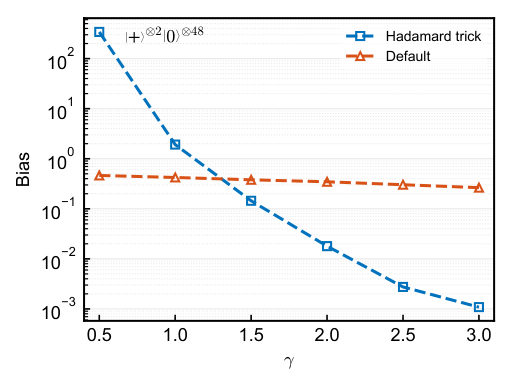
<figcaption class="paper-figure-caption"><b>Fig 2.</b> FIG. 2. Scaling of the estimation bias with respect to the parameter 𝛾for the worst-case state vector |+⟩⊗2 |0⟩⊗𝑛−2 with 𝑛= 50. The performance of the Hadamard-conjugated task (𝜌′, 𝑂′, blue squares) is compared with the default task (orange triangles).</figcaption>
</figure>
<figure class="paper-figure-card">
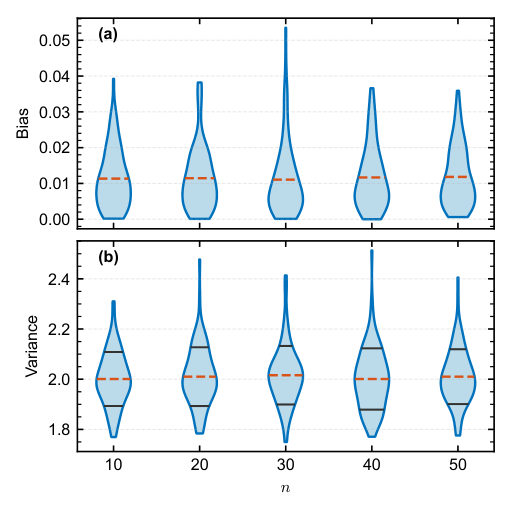
<figcaption class="paper-figure-caption"><b>Fig 3.</b> FIG. 3. Statistical distribution of the estimation bias and variance with respect to qubit number 𝑛. Data are collected from 100 independently sampled random stabilizer states with 𝛾= 2 and 104 shots for each state. The violin plots illustrate the variation in estimator performance among different quantum states. The dashed lines indicate the mean value of bias and variance, and the solid black lines in (b) represent the standard deviation range.</figcaption>
</figure>
<figure class="paper-figure-card">

<figcaption class="paper-figure-caption"><b>Fig 4.</b> FIG. 4. Comparison of the estimation bias against two-qubit gate count (see Appendix G 2) for three shallow shadow schemes: 1D brickwork circuits (blue circles, [37]), Gluing circuits (orange squares, [39]), and SPS (yellow triangles, our approach). Notice that the logarithmic-depth one-dimensional (1D) brickwork baseline exhibits relative-error approximate state 2-design behavior established in Ref. [84, 85]. The results are shown for (a) the tensor product state vector |+⟩⊗𝑛, (b) |+⟩⊗𝑛/2 |0⟩⊗𝑛/2, with 𝑛= 48 and 2 × 104 shots and (c) the 1D cluster state. For SPS, the bias drops rapidly below the statistical noise floor (∼10−2), making the measurement error the dominant source of...</figcaption>
</figure>
<figure class="paper-figure-card">
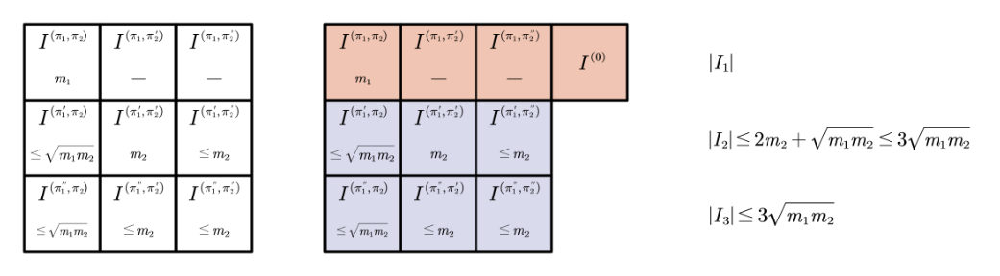
<figcaption class="paper-figure-caption"><b>Fig 5.</b> FIG. 6. Schematic organization of the permutation sectors used in the variance bound. The sectors are indexed by an odd label 𝜋1 and an even label 𝜋2. We choose two dominant sectors with different row and column labels, of sizes 𝑚1 and 𝑚2, whose product is maximal. This maximality bounds the relevant non-dominant sectors by √𝑚1𝑚2, so that after grouping sites by odd labels the two smaller groups have sizes</figcaption>
</figure>
</div>

<p><strong>Summary.</strong> This paper introduces Shallow Phase Shadows (SPS), a novel quantum readout technique for estimating quantum state fidelities. It achieves constant-depth global estimation on architectures with long-range connectivity, bypassing the need for deep, highly random measurement circuits. This makes quantum state characterization significantly more feasible for near-term, resource-constrained quantum hardware.</p>
<p><strong>Why it may be interesting.</strong> It provides a concrete, resource-aware blueprint for quantum characterization, directly addressing the engineering bottleneck of measurement overhead in large-scale quantum computation.</p>
<details>
<summary>Detailed structure</summary>
<p><strong>Main problem.</strong> Developing scalable and reliable readout strategies for quantum processors to estimate quantum states without measurement circuits becoming a bottleneck.</p>
<p><strong>Main result.</strong> The proposed Shallow Phase Shadows (SPS) protocol achieves constant-depth global estimation of stabilizer-state fidelities on all-to-all architectures, significantly outperforming protocols requiring generic randomness.</p>
<p><strong>Method.</strong> The protocol uses a sparse Clifford-IQP ensemble and introduces a 'second-look principle' to ensure accurate estimation while maintaining shallow circuit depth.</p>
<p><strong>Model / system.</strong> The work applies to general quantum processors, specifically mentioning platforms like trapped ions and neutral atoms due to their native long-range connectivity.</p>
<p><strong>Key observables.</strong> Stabilizer-state fidelities, estimation bias ($\epsilon$), and total two-qubit gate count ($N_g$).</p>
<p><strong>Important parameters / regimes.</strong> Sparsity parameter ($\gamma$), circuit depth (constant vs. logarithmic), and system size ($n$).</p>
<p><strong>Assumptions / limitations.</strong> The constant depth is achievable by utilizing mid-circuit measurements and classical feedforward, and the protocol circumvents the need for the ensemble to form an approximate relative-error design.</p>
<p><strong>Figures summary.</strong> Figures compare SPS's constant-depth guarantee against other methods, show the second-look principle measuring complementary observables, and illustrate the scaling of estimation bias and resource costs.</p>
<p><strong>Paper structure.</strong> The paper introduces the problem, details the SPS method using the sparse Clifford-IQP ensemble, proves the constant-depth feasibility, and finally analyzes the variance and compares resource costs against existing shadow estimation techniques.</p>
</details>
<details>
<summary>Abstract</summary>
<p>Reliable and scalable readout strategies are essential for quantum technologies. As quantum processors grow, extracting useful information must remain feasible without measurement circuits becoming a dominant bottleneck. Randomized measurements and classical shadows provide a powerful route, but global estimation is conventionally associated with highly random ensembles that require increasing circuit depth and hence substantial experimental overhead. In this work, we show that substantially less randomness suffices when the readout is meaningfully adapted to the quantities being estimated. We introduce shallow phase shadows, based on a sparse Clifford-IQP ensemble, and prove efficient global estimation of stabilizer-state fidelities despite the ensemble not forming an approximate relative-error design. On all-to-all architectures, the protocol admits a constant-depth implementation using mid-circuit measurements and classical feedforward, or logarithmic depth without auxiliary systems. The protocol requires only controlled-phase entangling gates and offers a tunable trade-off between circuit resources and estimation accuracy, making it particularly amenable to experimentally relevant architectures with long-range connectivity. Our results show that scalable quantum readout need not reproduce generic randomness: task-adapted randomization can enable substantially shallower global characterization protocols.</p>
</details>
<p><sub><a href="#top">↑ back to top</a></sub></p>

<p><a id="paper-2609.09562"></a></p>
<h3 id="curvature-induced-geometric-universality-in-non-hermitian-anderson-transitions"><a href="http://arxiv.org/abs/2609.09562v1">Curvature-Induced Geometric Universality in Non-Hermitian Anderson Transitions</a></h3>
<p><strong>Authors:</strong> Chen Wang, Run-Qiu Yang, X. R. Wang, Hechen Ren<br>
<strong>Type:</strong> theory · <strong>Category:</strong> disordered systems and neural networks · <strong>PDF:</strong> <a href="https://arxiv.org/pdf/2609.09562v1">https://arxiv.org/pdf/2609.09562v1</a><br>
<strong>Analysis basis:</strong> full PDF text, analyzed in chunks
<strong>Topic relevance:</strong> <code>non-equilibrium universality</code> <strong>3/5</strong></p>
<div class="figure-strip-hint">↔ Scroll figures horizontally</div>
<div class="paper-figures-scroll">
<figure class="paper-figure-card">
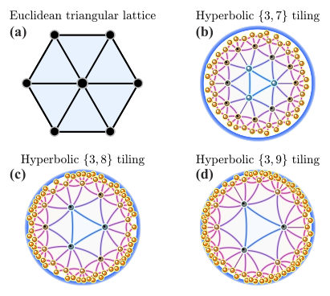
<figcaption class="paper-figure-caption"><b>Fig 1.</b> FIG. 1. Schematic comparison of a Euclidean triangular lattice and three representative {p, q} hyperbolic tilings, where each polygon has p sides and q polygons meet at each vertex: (a) the triangular lattice with {p, q} = {3, 6}; (b–d) hyperbolic tilings with {p, q} = {3, 7}, {3, 8}, and {3, 9}, respectively. While the Euclidean lattice is flat, the hyperbolic tilings possess negative curvature and exhibit expo- nential volume growth, N(L) ∼η(p, q)L. Finite-size scaling anal- yses indicate that the non-Hermitian Anderson transitions on these hyperbolic-like lattices share a common critical exponent ν ≃1.</figcaption>
</figure>
<figure class="paper-figure-card">
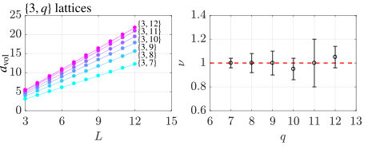
<figcaption class="paper-figure-caption"><b>Fig 2.</b> FIG. 3. (a) Volume-growth dimension dvol of the {3, q} hyperbolic- like lattices as a function of graph distance L from the center. The slopes of these curves determine the volume-growth factors η(3, q). (b) Critical exponent ν for the {3, q} tilings, which is consistent with ν = 1 (red dashed line) within numerical uncertainty.</figcaption>
</figure>
<figure class="paper-figure-card">
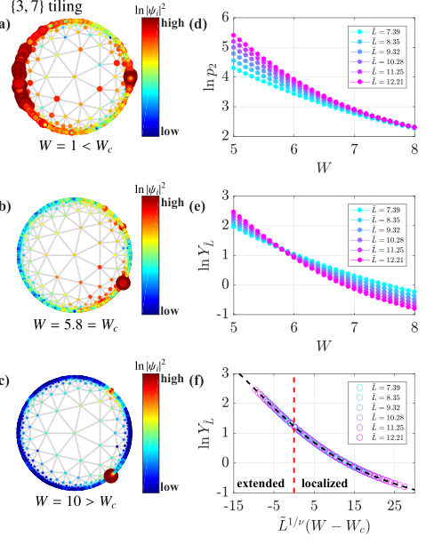
<figcaption class="paper-figure-caption"><b>Fig 3.</b> FIG. 2. Plots of the wave-function amplitude distributions on the {3, 7} lattice and E = 0 for (a) the extended phase at W = 1 &lt; Wc, (b) the critical point at W = 5.8 = Wc, and (c) the localized phase at W = 10 &gt; Wc. The color scale encodes ln |ψi|2. One ensemble is used here. (d) ln p2 as a function of W for various ˜L of the {3, 7} lattice at energy E = 0. (e) ln Y ˜L versus W for the same data as in (d). (f) Scaling collapse of ln Y ˜L as a function of the scaling variable x = ˜L1/ν(W −Wc). The black dashed line denotes the scaling function f(x) obtained from the χ2 fit, while the red solid line marks the phase boundary between the extended and localized phases.</figcaption>
</figure>
</div>

<p><strong>Summary.</strong> This work explores Anderson transitions on negatively curved, hyperbolic lattices, finding that the critical behavior is universal ($
u \simeq 1$) regardless of the specific tiling used. This suggests that the large-scale negative curvature of the geometry itself dictates the universality class, providing a geometric organizing principle beyond traditional symmetry rules.</p>
<p><strong>Why it may be interesting.</strong> The concept of geometric universality suggests that fundamental physical properties (like critical exponents) can be determined by the global geometry of the embedding space, offering a powerful new organizing principle beyond standard symmetry classifications.</p>
<details>
<summary>Detailed structure</summary>
<p><strong>Main problem.</strong> The study investigates whether the critical behavior (universality class) of Anderson transitions in non-Hermitian systems is dictated by the underlying geometry when the lattice is hyperbolic, rather than just symmetry or dimensionality.</p>
<p><strong>Main result.</strong> The critical behavior exhibits a common critical exponent ($
u \simeq 1$) across various hyperbolic tilings, suggesting that the negative curvature of the geometry acts as a universal organizing principle.</p>
<p><strong>Method.</strong> The analysis combines finite-size scaling of the participation ratio with a complementary phenomenological coarse-grained Landau-Ginzburg field theory approach.</p>
<p><strong>Model / system.</strong> The system is a non-Hermitian Anderson model defined on hyperbolic-like lattices, specifically restricted patches of $\{p, q\}$ tilings. The Hamiltonian is a tight-binding model with complex, disorder-induced hopping and on-site energies.</p>
<p><strong>Key observables.</strong> Critical disorder strength ($W_c$), critical exponent ($
u$), and the disorder-averaged participation ratio ($p_2$).</p>
<p><strong>Important parameters / regimes.</strong> Disorder strength ($W$), hyperbolic tiling parameters ($\{p, q\}$), and the effective length scale ($  ilde{L} = \ln N$).</p>
<p><strong>Assumptions / limitations.</strong> The critical behavior is assumed to be governed by the large-scale hyperbolic geometry, leading to exponential volume growth that suppresses critical fluctuations.</p>
<p><strong>Figures summary.</strong> Figures compare wave-function distributions and show finite-size scaling collapses for different hyperbolic tilings, demonstrating consistent critical exponents.</p>
<p><strong>Paper structure.</strong> The paper first establishes the model on hyperbolic lattices, then applies finite-size scaling to determine critical exponents, and finally uses a Landau-Ginzburg analysis to provide a physical rationale for the observed geometric universality.</p>
</details>
<details>
<summary>Abstract</summary>
<p>In Euclidean space, universality classes of Anderson transitions are primarily determined by symmetry and spatial dimensionality. Here, we present evidence for a geometry-controlled universality class of non-Hermitian Anderson transitions on hyperbolic-like lattices. In this setting, critical behavior is influenced by the large-scale hyperbolic geometry, characterized by negative curvature, exponential volume growth, and a non-Euclidean notion of spatial scaling. Finite-size scaling of participation ratios across several distinct \( \{p,q\} \) tilings reveals one-parameter scaling collapses with a common critical exponent \( ν\simeq1 \) within numerical accuracy. A complementary phenomenological coarse-grained Landau-Ginzburg analysis shows how exponential correlation-volume growth suppresses critical fluctuations, offering a rationale for the observed mean-field-like scaling. Our results suggest that spatial curvature can act as an additional organizing principle for Anderson-transition universality beyond the conventional dimensionality- and symmetry-based classification.</p>
</details>
<p><sub><a href="#top">↑ back to top</a></sub></p>

<p><a id="paper-2609.09980"></a></p>
<h3 id="fidelity-aware-scheduling-of-quantum-circuits-on-multi-qpu-systems"><a href="http://arxiv.org/abs/2609.09980v1">Fidelity-Aware Scheduling of Quantum Circuits on Multi-QPU Systems</a></h3>
<p><strong>Authors:</strong> Innocenzo Fulginiti, Antonio Tudisco, Salvatore Zammuto, Patrick Hopf, Deborah Volpe, Helmut Seidl, Giovanna Turvani, Robert Wille, Christian B. Mendl, Martin Schulz<br>
<strong>Type:</strong> both · <strong>Category:</strong> quantum information and computing · <strong>PDF:</strong> <a href="https://arxiv.org/pdf/2609.09980v1">https://arxiv.org/pdf/2609.09980v1</a><br>
<strong>Analysis basis:</strong> full PDF text, analyzed in chunks
<strong>Topic relevance:</strong> <code>QC/QI experiment</code> <strong>3/5</strong></p>
<div class="figure-strip-hint">↔ Scroll figures horizontally</div>
<div class="paper-figures-scroll">
<figure class="paper-figure-card">

<figcaption class="paper-figure-caption"><b>Fig 1.</b> Fig. 1: End-to-end pipeline of the proposed framework. A user-submitted batch of k high-level quantum circuits is converted into Directed Acyclic Graphs with per-node feature vectors and fed to the GNN fidelity predictor, which produces an estimated fidelity matrix ˆF over all k × D circuit-device pairs. The tunable scheduler, parameterized by the fidelity weight w, routes each circuit to one of the available QPU backends; each assigned circuit is then transpiled against the target device’s native gate set and connectivity, and then executed on the corresponding backend.</figcaption>
</figure>
<figure class="paper-figure-card">
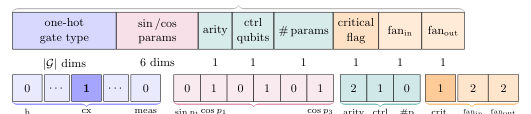
<figcaption class="paper-figure-caption"><b>Fig 2.</b> Fig. 2: Conversion from circuit to DAG. A quantum circuit (a) is translated into a DAG (b), whose nodes are gates and measurements and whose edges encode data dependencies; each node is then mapped to the feature vector of (c), shown for a CX gate.</figcaption>
</figure>
<figure class="paper-figure-card">
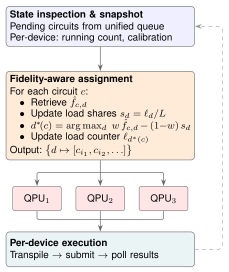
<figcaption class="paper-figure-caption"><b>Fig 3.</b> Fig. 3: Logic of a single dispatch tick within the QMS. The broker constructs an immutable snapshot of the queue and per-device state, invokes the scheduling policy to produce a device-to-circuit mapping, and dispatches each circuit to its assigned backend for transpilation and execution. The dashed arrow indicates the tick-based cycle.</figcaption>
</figure>
<figure class="paper-figure-card">

<figcaption class="paper-figure-caption"><b>Fig 4.</b> Fig. 5: RMSE of the model on the test set, grouped by target fidelity.</figcaption>
</figure>
<figure class="paper-figure-card">
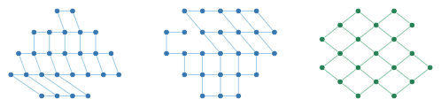
<figcaption class="paper-figure-caption"><b>Fig 5.</b> Fig. 4: Coupling maps of the target devices.</figcaption>
</figure>
</div>

<p><strong>Summary.</strong> This paper introduces a fidelity-aware scheduling framework for quantum circuits running on multi-QPU systems. It uses a Graph Neural Network (GNN) to predict the expected fidelity on various hardware devices before compilation. By introducing a tunable weight $w$, the scheduler effectively balances the trade-off between achieving the highest possible fidelity and maximizing the utilization of all available quantum processing units.</p>
<p><strong>Why it may be interesting.</strong> This work directly tackles the practical challenge of compiling algorithms for real, noisy, and heterogeneous quantum hardware, which is a major bottleneck in applying quantum computation to physical systems.</p>
<details>
<summary>Detailed structure</summary>
<p><strong>Main problem.</strong> The paper addresses the challenge of scheduling quantum circuits on heterogeneous multi-QPU systems to maximize execution fidelity while maintaining high device utilization.</p>
<p><strong>Main result.</strong> The proposed framework achieves near ground-truth fidelity while significantly reducing the computational overhead associated with brute-force, exhaustive device selection.</p>
<p><strong>Method.</strong> It employs a Graph Neural Network (GNN) to predict the expected fidelity of a circuit on every available QPU before compilation, which informs a tunable scheduler.</p>
<p><strong>Model / system.</strong> The system involves multi-QPU platforms with varying topologies and noise characteristics. Circuits are modeled as graphs (DAGs) for GNN input, and fidelity is calculated based on accumulated gate error probabilities.</p>
<p><strong>Key observables.</strong> Mean ground-truth fidelity, scheduling overhead (wall-clock time), and fidelity regret.</p>
<p><strong>Important parameters / regimes.</strong> The tunable scheduling weight $w \in [0, 1]$, which balances the trade-off between fidelity maximization and parallelism/utilization.</p>
<p><strong>Assumptions / limitations.</strong> The core assumption is that the GNN can accurately predict the circuit fidelity without incurring the massive computational cost of full, device-specific compilation for every possibility.</p>
<p><strong>Figures summary.</strong> Figures illustrate the end-to-end pipeline, the conversion of circuits to graphs, and show how mean fidelity increases with $w$ (Fig. 8) while the scheduling overhead remains low compared to exhaustive methods (Fig. 9).</p>
<p><strong>Paper structure.</strong> The paper details an end-to-end pipeline: 1) Graph construction from quantum circuits, 2) Using a GNN (with SAGE layers) to estimate fidelity on multiple QPUs, and 3) A tunable scheduler that uses these estimates based on the weight $w$ to assign circuits.</p>
</details>
<details>
<summary>Abstract</summary>
<p>High Performance Computing-Quantum Computing (HPCQC) platforms expose multiple Quantum Processing Units (QPUs) that may differ in size, topology, native gates, and noise characteristics. For current noisy devices, errors compound along the compiled circuits quickly, and minimizing them, that is, maximizing the circuits' execution fidelity, is essential for reliable results. Fidelity depends on the compilation to a specific target device: the same high-level circuit may produce different executables and, therefore, different expected fidelities across QPUs. We present a low-overhead fidelity-aware scheduling framework for multi-QPU systems based on a Graph Neural Network (GNN) that estimates, before compilation, the expected fidelity of each circuit on each available QPU. Then, a tunable scheduler uses these estimates to control the trade-off between execution fidelity and parallelism. Results show that this framework allows for approximating an exhaustive fidelity-based assignment, saving computational resources compared to a brute-force approach that compiles each circuit on every device.</p>
</details>
<p><sub><a href="#top">↑ back to top</a></sub></p>

<p><a id="paper-2609.10106"></a></p>
<h3 id="infinite-ergodic-theory-and-functional-statistics-of-non-confined-feller-process"><a href="http://arxiv.org/abs/2609.10106v1">Infinite ergodic theory and functional statistics of non-confined Feller process</a></h3>
<p><strong>Authors:</strong> Vicenç Méndez<br>
<strong>Type:</strong> theory · <strong>Category:</strong> statistical mechanics · <strong>PDF:</strong> <a href="https://arxiv.org/pdf/2609.10106v1">https://arxiv.org/pdf/2609.10106v1</a><br>
<strong>Analysis basis:</strong> full PDF text, analyzed in chunks
<strong>Topic relevance:</strong> <code>non-equilibrium universality</code> <strong>3/5</strong></p>
<div class="figure-strip-hint">↔ Scroll figures horizontally</div>
<div class="paper-figures-scroll">
<figure class="paper-figure-card">

<figcaption class="paper-figure-caption"><b>Fig 1.</b> FIG. 1. Main panel: Log-log plot of the mean local time ⟨L(x, t)⟩as a function of position x for</figcaption>
</figure>
<figure class="paper-figure-card">

<figcaption class="paper-figure-caption"><b>Fig 2.</b> FIG. 2. Spatial correlation function R(x1, x2, t) as a function of the ratio x2/x1 for x1 = 1.0 and</figcaption>
</figure>
<figure class="paper-figure-card">

<figcaption class="paper-figure-caption"><b>Fig 3.</b> FIG. 3. Rescaled probability density ⟨L⟩P(L, x, t) versus L/⟨L(x, t)⟩. Symbols represent numerical</figcaption>
</figure>
<figure class="paper-figure-card">
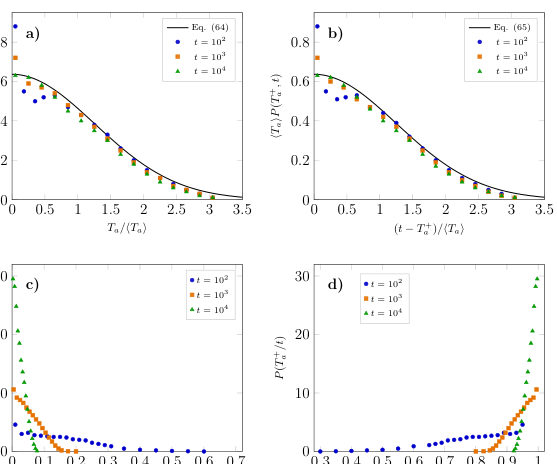
<figcaption class="paper-figure-caption"><b>Fig 4.</b> FIG. 4. (a) Rescaled probability density of Ta(t), ⟨Ta⟩P(Ta, t), as a function of Ta/⟨Ta⟩, compared</figcaption>
</figure>
<figure class="paper-figure-card">

<figcaption class="paper-figure-caption"><b>Fig 5.</b> FIG. 5. Ergodicity breaking parameter of Aq(t) as a function of θ. Solid lines denote theoretical</figcaption>
</figure>
</div>

<p><strong>Summary.</strong> This paper investigates the long-time statistical behavior of non-confined Feller processes, which exhibit infinite ergodic behavior due to non-normalizable stationary densities. The key finding is that the local-time field factorizes into a deterministic spatial part and a random temporal part governed by Mittag-Leffler statistics. This provides a unifying framework for understanding correlations in systems where standard ergodicity breaks down.</p>
<p><strong>Why it may be interesting.</strong> The concept of infinite ergodic theory and the resulting Mittag-Leffler statistics provide powerful tools for analyzing systems where standard time-averaging theorems fail, which is relevant for non-equilibrium dynamics in complex physical systems.</p>
<details>
<summary>Detailed structure</summary>
<p><strong>Main problem.</strong> The study focuses on the spatial structure and multi-point correlation properties of the local-time field for non-confined Feller processes within the framework of Infinite Ergodic Theory.</p>
<p><strong>Main result.</strong> The local-time field exhibits an asymptotic spatiotemporal factorization, $L(x, t) \propto I(x) \cdot \xi$, where the spatial profile is deterministic and the temporal fluctuations are governed by a Mittag-Leffler random amplitude.</p>
<p><strong>Method.</strong> The analysis uses asymptotic factorization techniques, comparing the non-confined (infinite ergodic) regime to the standard ergodic regime, and analyzing scaling limits for various observables.</p>
<p><strong>Model / system.</strong> The model is a non-confined Feller process, which is characterized by a non-normalizable stationary probability density, contrasting with confined cases where standard ergodic theory applies.</p>
<p><strong>Key observables.</strong> Local-time field $L(x, t)$, normalized spatial correlations of local time, occupation times ($T_a(t)$), and non-integrable power observables ($A_q(t)$).</p>
<p><strong>Important parameters / regimes.</strong> The non-confining parameter ($\alpha=0$), the spatial density exponent ($  heta$), and the observation time $t 	o \infty$.</p>
<p><strong>Assumptions / limitations.</strong> The analysis relies on the existence of an infinite invariant density $I(x)$ when standard ergodicity breaks down.</p>
<p><strong>Figures summary.</strong> Figures illustrate the mean local time $\langle L(x, t) 
angle$ dependence on space and time, and the convergence of normalized cross-correlations to a universal constant.</p>
<p><strong>Paper structure.</strong> The paper progresses by defining the Feller process in both confined and non-confined settings, reviewing the transition from standard to infinite ergodic theory, and then detailing the results on local-time factorization, correlation functions, and the distinction between integrable and non-integrable observables.</p>
</details>
<details>
<summary>Abstract</summary>
<p>We study additive observables of a non-confined Feller process characterized by a non- normalizable stationary probability density and return times with infinite mean. The process is equivalent, after a deterministic rescaling, to a squared Bessel process, but we focus here on a question: the spatial structure of its local-time field. We show that the local time admits a fac- torization in the long time limit. Its spatial profile is governed by the non-normalizable stationary density, whereas its temporal fluctuations are controlled by a single Mittag-Leffler random ampli- tude. As a consequence, normalized spatial correlations of the local time converge to a universal constant independent of the two observation levels. Occupation times of finite intervals follow as corollaries and display Darling-Kac fluctuations. In contrast, non-integrable power observables exhibit self-similar squared-Bessel-type limits rather than Mittag-Leffler statistics. This spatial- field perspective provides a unifying framework for infinite ergodic theory under state-dependent multiplicative noise.</p>
</details>
<p><sub><a href="#top">↑ back to top</a></sub></p>
<hr>
<p>
<a href="index.html">← Index</a>
 · <a href="papers_02.html">← Previous</a> · <a href="papers_04.html">Next →</a>
</p>
<hr>

</body>
</html>
